The build, explained one sprint at a time
⚠ Before anything else: Meta killed our reach metrics, and the target is dead
On 15 June 2026 Meta deprecated the whole post_impressions_* family. Our insights feed has been silently dark since 14 June (~6 weeks). Reach is recoverable under a new metric (post_total_media_view_unique, verified live by Faheem). Viral reach is gone for good, no replacement. That kills both candidate targets for the performance model: viral_reach / reach and (shares+comments) / post_impressions_unique. Engagement metrics (shares, comments, reactions, clicks) are unaffected. Full detail: Meta_Reach_Deprecation_Escalation, 25 Jul 2026.
→ The recommendation and back-test protocol are in Sprint 8, Workstream A (Decision zero)
How to read this page
Each sprint gets: the mission, the strategy per workstream, model inputs and outputs, flow diagrams, benchmarks and gates, the research it stands on, and every person's tickets in plain words.
Tags like MR-3.1 point into the Model Master Rules (24 Jul 2026). If a ticket and a rule disagree, raise it, don't guess. Open decisions are marked with an owner, never silently resolved here.
We predict performance bands, never virality. Every claim ships with reasons and a calibrated probability. If the data is thin, the product says so instead of guessing. That is the moat.
Every mockup screen, and the sprint that builds it
The honest audit: all 9 web views and all 6 mobile screens in the V3 mockup, each mapped to the sprint that makes it real. Three things in the mockup are deliberately not in the MVP, and they are named here rather than quietly dropped.
| Mockup screen | Built in | What makes it real, and when |
|---|---|---|
| Today (web + mobile) the daily loop |
S6 S8 S14 | S6 builds the shell, the stories rail and the sparklines. S8 adds the compose risk dial. S14 wires every card to live pipeline data, which is when the daily loop becomes the retention engine it was designed to be. |
| Studio / Planner (web + mobile) drafts + best times |
S6 S8 S9 S14 | S6 builds the first heatmap grid. S8 puts real scores on the drafts. S9 makes the heatmap honest (normalised, silent under 5 posts) and adds the recommendation. S14 makes scoring live as you type. |
| Analytics (web) overview / photos / video / advanced |
S6 S7 S14 Later | S6 builds Engagement / Reach / Sentiment on real data. S7 adds the video sub-tab and the sortable raw-signals table. S14 wires it all live. The "Advanced" sub-tab (cascade, super-sharer) is explicitly Later, not MVP. |
| Post drill-down (web) click any post |
S7 S10 | S7 adds the video-intelligence panel to the post view. S10 builds the full drill-down: metrics, sentiment, image and video signals, and our own prediction next to the outcome. |
| Predicted wins (web) the predictions surface |
S7 S8 | S7 puts the first virality score on posts. S8 turns the surface into honest weak-post warnings plus the predicted-vs-actual scoreboard. The "wins" framing retires: it warns, it never promises winners. |
| Alerts (web + mobile + popover) crisis + the bell |
S11 | Built whole in S11: the detector, the alert engine (problem + one action + citations), the alerts page, the live popover and the rules builder. |
| Discover (web + mobile) cards + match scores |
S10 S12 S13 | S10 builds the graph, S12 the business-card pipeline, S13 the page itself with real match scores, the k=5 privacy floor and the opt-in. Nothing is visible to a pilot until S13. |
| Art-E (web rail + mobile orb) grounded Q&A |
S16 S17 S18 | S16 ships it whole (RAG index, citations, memory, refusal) once auth and tenancy exist. S17 adds thumbs, routing and memory controls. S18 upgrades the model and makes the citation gate hard. Moved out of S8 on 29 Jul: it needs foundations that land in S16. |
| Settings (web) 7 tabs |
S16 S21 FF | S16 ships the three trust tabs (connect, notifications, data control). S21 completes all 7 plus quiet hours and cookie consent. Inside this screen: the theme toggle is Fast-Follow, and "invite a teammate" and WhatsApp alerts are Later. |
| Pages (web) connect + health |
S16 S21 | S16 connects pages on dev-mode tokens. S21 flips to real public OAuth (Live Mode), with connection health, re-sync and the onboarding tour. |
| Inbox (web + mobile) collab chat with Art-E |
Later | Deliberately not in the MVP. The collaboration chat (Team Messages) is a Later feature and inbox triage is Fast-Follow (web · mobile). The mockup shows the destination; the MVP delivers the match that starts the conversation (S13 Discovery), and the conversation itself moves to WhatsApp or email until the feature is built. Detail below. |
| Cmd-K palette, health score, milestones the chrome |
S6 S14 | Part of the React app foundation and design system in S6, populated with real data in S14. They are chrome around the features, not features themselves. |
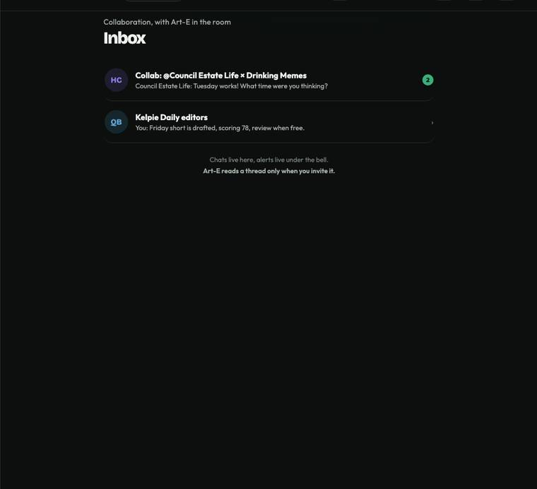
The mockup's Inbox: collaboration chat with Art-E in the room. A Later feature, shown here so nobody mistakes it for a launch commitment.Sprint 6 · 8 to 21 Jul 2026 · Eyes✓ shipped
In one sentence: the product learned to see. Before S6 the pipeline only read the caption a user typed; after it, we read what is actually inside the image, and the first real screens went up on real data. Why it is here: S8 onward stands entirely on this, and the numbers below are what the flop model eats.
What it built, in and out
| Capability | What goes in | How it works | What comes out |
|---|---|---|---|
| OCR read the image | Every post image, downloaded at last (the S6 unlock: the 2-year backfill had only ever pulled text) | A confidence-routed cascade: a fast engine reads the easy ~79%, anything below threshold escalates to a compact vision-language model on GPU. A swapguard reverts the VLM when it hallucinates or loops. Preprocessing is type-aware, because it hurts screenshots | The text inside the image, plus its confidence. Never: garbled text shown as fact; low confidence is marked |
| Image-context fusion what kind of post is this | Three vectors: the image, the OCR text, the caption | CLIP late fusion: concatenate the three into one vector, pass through a small network, trained with modality dropout so it stays right when one input is missing | One of 5 content types + a calibrated confidence. Macro F1 0.93, strong even on rare classes. This is the picture feature the flop model uses |
| The first real screens | The labelled pipeline output | React foundation + design system from the mockups; Analytics, the feed image chips, the Best Times grid, sparklines, the stories rail | Screens on real data for the first time. Never: a signal shown without its confidence |
In one sentence: the pipeline stopped being blind, and every screen after this one has real numbers to show.
S6 is the foundation the rest of the playbook assumes. It is here so nobody has to guess what "the image signals" or "the app shell" refer to.
The sprint that made everything downstream possible: the images were finally fetched and stored, read, classified, and surfaced, and the app got a real foundation instead of a mockup.
- 23 of 23 tickets delivered across the whole team
- Fusion Macro F1 0.93, the honest metric (meme n=1,326 vs product-shot n=55: accuracy alone would have flattered it)
- Runs weekly and automatically, with low-confidence cases routed to audit rather than shown
- The monitoring rule that S9's watchdog inherits: alert on drift AND a quality drop together, never drift alone
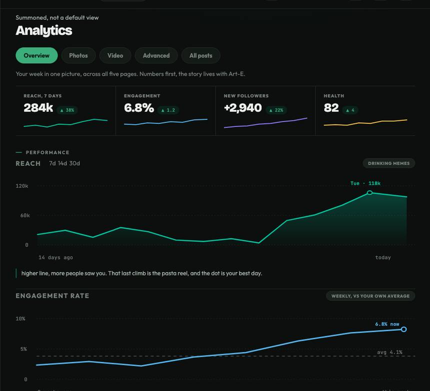
Analytics: S6 built this on real data. S7 adds the video sub-tab, S14 wires every number live.Sprint 7 · 24 Jul to 6 Aug 2026 · Foresightin flight
In one sentence: teach the pipeline to watch video, and make its first forward-looking prediction. The honest update: the video half landed as designed, and the prediction half is what produced the finding that reshaped the product: winners are not predictable, flops are. S8 exists because of what S7 learned.
What it builds, in and out
| Capability | What goes in | How it works | What comes out |
|---|---|---|---|
| Video intelligence | The 46 videos in S3 (frames at 0.5 fps, plus audio) | Zero-shot by necessity: 46 videos cannot train a classifier. CLIP for scene type against text labels, the S6 OCR reused on keyframes, Whisper for speech, and a transparent weighted rule for the opening-3-seconds hook score | Four signals per video: scene, on-screen text, transcript, hook. Never: a trained video model pretending 46 examples was enough |
| Virality model v1 | Content type + scene + hook + timing + page baseline | Strict time-split (train past, test future), calibrated, SHAP-explainable. The methodology was right; the answer was negative | The finding that changed the product: AUC 0.51 on winners, 2 "strong" calls in 971 posts, NLP labels adding ~0 lift. Top-end virality is post-publish luck |
| Affinity graph | Comment co-occurrence per page, de-identified at ingest | User-user edges built with NetworkX, running in parallel with no dependency on the model work | The affinity edges that S10 turns into the cross-page graph |
The finding, and why it was worth having
What S7 actually proved
The A/B was clean and the discipline held: pass line declared first, strict time split, no leakage. The result was AUC 0.51 on winner prediction, a coin flip, with NLP content labels adding +0.0016 AUC: nothing. Reframed as a per-page percentile regression it worked partially: rank correlation 0.26, with flop-band posts landing a real 20 points lower on their page's own ladder. Weak, but real, and concentrated exactly where the product makes claims.
The visual finding explained why: our content is ~99% single images, and three posts with identical captions and identical NLP labels scored 13.8% / 3.2% / 0%. Everything that differed was the picture. This is why the S8 model eats CLIP embeddings first and treats text as a passenger.
Why a negative result was a good sprint
Because it arrived in July on a benchmark instead of in December in front of a pilot. The published literature says the same thing (models explain under half of success even with unlimited data; content-only meme models plateau near chance), so this was the field's answer, found in our own data, before we shipped a promise we could not keep.
It converted the whole product from prophecy to patterns: warn honestly about the bottom, look up what is countable, and refuse to forecast the top. Every gate, every band and every "never" in the sprints that follow traces back to this sprint's number.
In one sentence: posts gain video understanding and their first score, and the team gains the finding that shaped everything after.
Two visible deliverables plus one invisible one, and the most valuable output of the sprint was a number nobody wanted.
Every video post gains four machine-readable signals, and the analytics page gains the depth a power user wants: sub-tabs by signal family, plus one table with every post and every signal, sortable and exportable.
- Scene accuracy at bar and transcript word-error-rate under bar on the hand-labelled 46-video gold set
- Silent, music-only and very short clips handled as explicit cases, not silent failures
- Raw table numbers reconcile with the charts above them
- Video predictions are low-confidence by construction and say so: with ~46 videos there is no honest per-page video ladder yet
The sprint delivered a working model and an honest verdict on it. The score exists; what it is allowed to claim shrank to what the data supports.
- Strict time split with no leaking features; calibration curve checked, not assumed
- Top-3 drivers make intuitive sense on manual examples
- The finding is written down and acted on rather than buried: winners are not predictable at draft time, so the product stops claiming they are
Sprint 8 · 5 to 8 Aug 2026 (compressed) · Predictions + a voice
The mission in one sentence: ship flop detection end to end: an honest score on every draft and weak-post warnings on the feed, with reasons, never viral promises. S6 gave the product eyes, S7 gave it foresight, S8 puts the foresight in front of the user. Rescoped 29 Jul: Art-E moved to S16 (it needs the real RAG index + tenancy that land there), and the metric migration finishes before this sprint starts (marvel PR #7), so S8 carries neither. Updated 5 Aug: a v1 model already exists before day 1 (VD-015B: LightGBM adopted, image features +10% ranking lift, runs end to end on 27K posts). The sprint's model work is now proof, not construction: re-score the gate at the real flop cut, show the calibration receipt, then freeze v1 on Friday of week 1 and give week 2 to the surfaces.
The whole sprint in five moves
Everything below on this tab is detail. This is the sprint: five moves, in order. Each "how" link jumps to the full recipe.
What goes in, what comes out
| Capability | What goes in (inputs) | Features it actually looks at | What comes out (outputs) |
|---|---|---|---|
| Flop detection one model, two surfaces: the Compose dial + the warnings feed |
The draft (image + caption + planned slot) · the page's 12-month ladder + current form (supplied by the backend, era-flagged) | Picture (the main dish): CLIP embedding ~100 dims + FUSION content type · Words: caption length, is_question, emoji, caps (NLP labels ride free) · Timing: hour, weekday, gap since last post · Page state: rolling median, trend slope, frequency · World trend score: optional, v1 ships without it | band at risk / average / strong for THIS page · p_flop calibrated (80% = 4 in 5) · reasons top 3, plain words · upside_odds · confidence normal / low. Never: a viral flag, a reach forecast, any absolute number |
The one law over every input: nothing that exists only after publishing may enter the model. Reach, likes, shares at score time are the answer, not the clue. Test for any proposed feature: "could I compute this from the draft alone, before posting?" MR-3.1 MR-3.2
Lock these first, or the sprint stalls
Four decisions gate the build. Each has one owner and a due day. Everything else on this page assumes they land in week 1.
Both old targets died with Meta's metrics. The candidates are now concrete: shares-percentile (what VD-015B built: deprecation-proof, but measured on our own warehouse 23.3% of all posts have zero shares and two pages have a MEDIAN of zero, so small-page ladders tie at the bottom) vs views-percentile (dense: every post has views). Run the pre-registered A/B with the pass line declared first. Either result keeps Faheem's pipeline; only the label column changes. Forces Master Rules Conflict #1 closed.
The draft-score request/response contract (Faheem + Muteeb + Asad), agreed before lunch on day 1. VD-209 is explicitly blocked until it lands; the seam between model and serving is where days get lost.
Two specs say bottom third (33rd percentile), one flow diagram says quarter. It changes what "weak post" means and how the 75% precision floor is measured. 5 Aug: VD-015B's 75-83% was measured with flop = bottom HALF, an easier base rate than either candidate cut. Decide D2 with the re-scored numbers in hand: same model, same test set, precision and coverage at the 33rd and 25th cuts. One day of work; do not repeat the 75% upstream until it exists. MR-8.2
Below 5 usable signals a draft gets "not enough to score yet", but which inputs count toward the 5 is undefined MR-2.7. This is not hypothetical: 6K of the 27K modelling posts (22%) lack image coverage today, and production drafts will arrive with missing signals from day 1. Faheem + Asad settle it in week 1 so the honest states are consistent across the model and both surfaces.
Added 5 Aug, from the VD-015B measurement review: three build gates that ride with the week-1 freeze.
"Calibrated" is committed in the output spec but no reliability curve exists. The receipt ships WITH the v1 freeze: isotonic fit on the newest window (the model straddles the 15 Jun metric change), reliability curve per page tier, and live warning-precision piped to the QA dashboard from day-1 render logs. Quote precision as a range: the flagged test set is a few hundred posts, so the honest claim carries roughly +/-4 points.
The predictive lift lives in ~100 opaque image-embedding dimensions; the explainable features are the weak ones. Naive SHAP-to-text will explain scores with things that barely moved them. Decide now: grouped attribution (image block vs timing vs caption vs page form) with templated language per group, and the one suggested fix drawn only from groups a user can change.
Training features come from warehouse batch, serving recomputes them live: two codebases computing one definition is how models silently degrade. The D1 contract includes the exact feature vector, and a single shared builder library serves both paths (batch imports it, the lambda imports it). Follower count as of draft time, never today's. Era flags identical on both sides.
Workstream A · Flop detection (Performance Model v1)
Predict the risk of underperforming. Never promise virality.
The research is unambiguous: the top end of social performance is post-publish luck, and our own A/B proved it (AUC 0.51 on winners, 2 "strong" calls in 971 posts). What IS learnable is the bottom: flop-band posts land a real 20 points lower on their page's own ladder. So the model ranks every draft against its own page's last 12 months and warns when a draft looks like the page's historical bottom third, with three reasons and a calibrated probability. MR-1.1 MR-1.2
Measured, 4 Aug (VD-015B): text/timing baseline rank-corr 0.153; +image content 0.169 (+10%, and caption semantics add ~0, so the image is where investment goes); XGBoost to LightGBM +1%, adopted; a coverage artifact that made images look useless was caught and reversed by re-testing like for like. Warning precision 75-83% at 10-15% coverage on the interim bottom-half label: re-scoring at the real cut is gate D2, and the number is quoted as a range pending confidence intervals. Raw CLIP embeddings and richer page-history features land later as v1.1 behind the same interface, never at the cost of week 2.
Plain english: the ladder
Take every post the page published in the last 12 months and line them up worst to best by how far people spread them. That line is the page's ladder. A new draft is scored by where it would probably land on that ladder: bottom third = "at risk", middle = "average", top third = "strong for your page". No global thresholds, ever: one page's "strong" is 10 to 20 times another's, so a shared cutoff would flag everything on one page and nothing on another. MR-2.2 The output is a band and the odds, spoken like a weather forecast: patterns tend to repeat; nothing "will" happen.
Decision zero: the new target (what "spread" means now)
| Metric | Status after 15 Jun 2026 | Use |
|---|---|---|
| post_impressions_viral_unique | GONE, no replacement | Old target numerator. Dead. Never again |
| post_impressions_unique | DEPRECATED | Old denominator. Dead for new posts |
| post_total_media_view_unique | NEW, verified live | The new reach (unique viewers). Not comparable to pre-June values |
| shares / comments / reactions | UNAFFECTED | The purest "what people did" signals we have |
Recommended target (for Rafeh + Alex to confirm, not decided here): two candidates, both era-flagged, both run through the same harness. Candidate A (research-preferred): y = within-page trailing-12-month percentile of log(shares), plus an absolute minimum-engagement floor so pages with near-zero activity cannot mint noise labels (the per-community-percentile-plus-floor pattern is the field standard, and shares alone measured a billion cascades in the structural-virality work with no impression data at all). It needs no denominator, so it is immune to the next metric Meta kills. Candidate B: percentile of share-rate = shares / post_total_media_view_unique (new era) and shares / post_impressions_unique (old era). Closer to the old "spread per viewer" meaning (MR-1.4) but carries denominator risk and the era discontinuity inside the ratio. Protocol: declare the pass line before looking (same discipline as the NLP baseline test), page-mix check first, run both through the VD-015B A/B harness on the time split, pick once, write it into VD-PM-008. Two era rules from the drift literature regardless of winner: never pool pre and post-break values inside one percentile computation, and refit the isotonic calibration on post-break data.
Inputs · what the model eats
| Group | Features | Weight of evidence |
|---|---|---|
| Picture 🖼 | CLIP embedding compressed to ~100 dims (PCA) + FUSION content_type + confidence. For video: hook_score, scene_type from S7 | The main dish. Content is ~99% images; three posts with identical captions and identical NLP labels scored 13.8% / 3.2% / 0%. Everything that differed was the image. MR-3.3 |
| Words | caption length, is_question, emoji count/type, humour words, caps ratio. NLP labels ride along as cheap features only | The side dish. Text-NLP added ~0 AUC on our meme-dominated data; it earns nothing new until genuinely text-led pages join. No spend may be justified by it. MR-3.5 |
| Timing | hour of day, day of week, gap since the page's last post | Real but secondary; timing advice itself stays on Best Times (S9), never on this surface MR-7.6 |
| Page state | page id, rolling 30-day median spread, trend slope (warming/cooling), post frequency. Computed as of each post's date, never from today | Carries current form into the score. The as-of-date rule prevents back-door leakage through the rolling features |
| World | topic trend score (Wikipedia pageviews / Google Trends) | The one winner-side signal knowable at draft time (trend badge) |
Outputs · what the user is told
| Field | Meaning | Surface |
|---|---|---|
| band | at risk / average / strong for this page (percentile cuts, D2) | Compose dial (VD-209), feed chips |
| p_flop | calibrated probability the draft lands in the page's bottom band. 80% means 80% (isotonic regression) | Warning threshold; fires only where validated precision ≥75% MR-8.3 |
| reasons | top 3 drivers (SHAP), in words a media buyer understands | Under the dial + Art-E's "why will this flop" answer. No reasons, no ship MR-1.5 |
| upside_odds | "posts like this hit 2x+ the page median N% of the time": historical frequency, unfalsifiable | Compose |
| trend_badge | the draft's topic is spiking right now (external trend data) | Compose |
| confidence | normal / low. Low under 100 posts of page history or under 5 usable signals: say so, never guess MR-1.7 MR-2.6 | Everywhere |
Flow · how a draft becomes a warning
Benchmarks + gates · when is it good enough
Honest expectations, so nobody oversells: the research ceiling is real. Even with unlimited data, roughly half of success is luck (Martin et al). Our rank correlation is ~0.26: weak but real and honest, and concentrated exactly where the product makes claims (the bottom band). The numbers to quote internally are the flop-band separation (22nd vs 42nd percentile) and the precision floor, never an accuracy percentage.
Exactly what to build · from the MARVEL repo audit, 28 Jul
Four agents audited the production codebase file by file. The good news: most of what S8 needs already exists; these steps reuse it with exact touch points.
Research foundation · every link verified 28 Jul 2026
The ceiling is real, the reframe is standard, the stack is state of practice. Winners of the ACM Social Media Prediction Challenge 2023, 2024 and 2025 are all gradient-boosted trees over frozen embeddings, exactly our architecture. The field's answer to unlearnable heavy-tail targets is exactly our answer: rank within the community, cut into bands.
Even with unlimited data, the best models explain less than half of cascade-size variance. Why we never promise winners.
Content-only models plateau at PR AUC ~0.13 ("the content ceiling"); 30 min of live engagement lifts to ROC AUC 0.92 (PR 0.43; 0.80 at 7h). Our AUC 0.51 on memes is the published pattern, not a failure.
On Facebook photo shares: content features alone 0.558 accuracy, early-growth features 0.780. Balanced "will it double" reframing makes a power-law target learnable. The blueprint for our band cuts.
Percentile-normalised relative engagement is stable over time and predictable cold-start (R² 0.77) where raw popularity is promotion-driven noise. The strongest precedent for the D0 percentile target.
Field-standard target: per-community 90th percentile PLUS an absolute minimum floor so tiny communities cannot mint noise labels. Copy the floor into D0.
A billion cascades measured from share structure alone, no impression data. Spread survives the metric apocalypse; the top end is broadcast luck.
Content signal only emerges once community and timing are controlled in the label. Within-page ranking is why our 0.26 rank-corr is real where absolute AUC was a coin flip.
The 15-Jun metric kill is textbook sudden measurement drift: era-stratify, never pool pre/post-break values in one percentile, refit calibration on post-break data.
The benchmark closest to our task (log-popularity regression, rank-correlation scoring). Podium recipe every year: GBDT stacks over frozen multimodal embeddings, and the 2024 winner's decisive signal was account-level popularity history: our page-state features.
30K heavy-tailed rows with ~100 embedding dims is exactly the regime where LightGBM wins and tuning beats architecture swaps. Spend the sprint on the target, not the model family.
Boosted trees are sigmoid-distorted; isotonic is safe only above ~1,000 calibration samples (below: Platt). Calibrate globally, never per page, and refit after the target change.
Exact per-prediction attributions cheap enough to serve at draft time; additivity means the ~100 CLIP dims can be summed into one honest "image content" reason.
Visual composition separates highly-shared from rarely-shared memes at AUC 0.866: the image really is the content. Its interpretable attributes (close-up, character, short overlay text) are candidate reason strings.
Honesty anchor: once page + timing features are in, full visual semantics adds only +0.009 rank correlation. Sell page + timing + content jointly; never promise a vision miracle.
Formal proof pairwise comparison beats absolute scoring once per-item noise is high (our regime). The statistical license for Draft Duel: within-page pairs cancel the shared luck term; for groups of 2-3 use a plain pairwise logistic, and only output a pick when the score gap clears a margin.
When predictions change the outcomes they predict, retraining chases a moving distribution. With Chaney 2018 (feedback loops silently shrink the flop base rate) and Bottou 2013 (the logging schema blueprint): log the shown score, reasons, model version and propensity with every prediction.
Three cheap, evidence-backed feature adds for v1: (1) a CLIP image-caption cosine-inconsistency scalar (Hsu et al 2024, doubles as the human-readable reason "caption doesn't match the image"); (2) out-of-fold predictions from caption-only and image-only sub-models stacked as features (the 2023 SMP winner's trick); (3) ablate the CLIP PCA at 50/100/150 dims against the precision floor (Kasneci 2024: ~50 dims often suffices, gains largest under class imbalance).
Who owns what
| Who | Tickets | In one line |
|---|---|---|
| Faheem | VD-015B · QA-AI-008 | The model: target A/B pull, LightGBM + isotonic + SHAP on the new target, and the test suite that gates it (calibration regression + band-stability jitter) |
| Muteeb | AI-008A · MLOPS-008A | Serving: the day-1 contract, the draft-score lambda path, the FUSION backfill (critical path), the retrain pipeline, and the prediction-log tables live before the dial renders |
| Asad | VD-209 · VD-210 | The two surfaces: Compose risk dial with honest states and the predictions home with weak-post warnings; owns the era-flag rule on every chart |
| Rafeh | PM-008 · QA-008 | Owns D0 (with Alex) + D2 flop cut + the definitions written before build; runs acceptance on real pilot data |
| Alex | STRAT-008MVP | The wedge decision: what a pilot should believe after S8 (we warn you in time, honestly); names the proof-of-value evidence so instrumentation starts now |
| Filza | LEGAL-008 | The "guidance, not a guarantee" disclaimer pattern on every prediction + the EU AI Act readiness note (Art-E legal work moves to S16 with the feature) |
| Jill | OPS-008MVP | Model-serving cost budget + alarms before breach; the unit-cost sheet (per prediction, per tenant-month) that unblocks pricing |
| Lewis | LEWIS-008MVP | Pilot first reactions to draft scoring: who trusts the score, who does not, and the ONE thing that would change their mind |
The plan, day by day: same order, compressed to four days
What Sprint 8 is deliberately NOT doing
Sprint 8 definition of done
- Target locked and written: D0 decided by Rafeh + Alex, recorded in VD-PM-008, ladders rebuilt on it.
- Model passes all six gates: beats caption-only on the time split · flop precision ≥75% verified · calibration near diagonal · band stable under small edits · sample discipline · everything logged. MR-10.3 MR-10.4
- Every prediction ships with 3 reasons and exactly one suggested action; low confidence surfaced honestly.
- Logging live from day one: draft, model version, exact advice shown, edits, outcome, for every render. MR-9.5
- Surfaces: Compose dial + predictions home match the mockups on desktop and mobile with honest empty / low states; no 2.4x anywhere.
- The non-engineer test: a media buyer reads the chip and knows what to do; acts on the warning without asking what it means. MR-10.5
- Money: scoring cost inside budget with alarms proven; unit-cost sheet delivered to Alex.
- Evidence: Rafeh's acceptance record on real pilot data; Lewis's half-page pilot read delivered.
How we prove it: benchmarking + the rules doc
How benchmarking helps us
It is what lets the demo say "check us" instead of "trust us". Three rings, each catching a different way to fool ourselves:
| Ring 1 · before ship | Strict time split (train on the past, test on the future) + the caption-only baseline. A model that learned nothing from the image cannot ship, and we find out in private, not in a demo |
| Ring 2 · at the door | The gates: flop precision ≥75% or the warning stays silent · calibration (when we say 80%, it happens 4 times in 5) · band stability under edits · sample discipline. Pilots never meet a confidently-wrong feature. The same discipline carries forward: S9 gets a pre-declared lift line with placebos, S16 Art-E gets a citation-precision floor |
| Ring 3 · forever | Every prediction logged with the advice shown · monthly predicted-vs-actual receipts, on the record for any pilot who asks · the advice-free holdout keeps the numbers honest after our own warnings change what pilots publish |
And the discipline that makes all three real: pass lines are written down before anyone sees results. It is the same discipline that caught the NLP zero-lift finding honestly, and it is why our accuracy claims can become a sales asset instead of a liability.
How Rafeh's Master Rules doc helps us
It is the constitution: numbered, citable rules that end arguments instead of restarting them. Where it bites in Sprint 8:
| Code review | "This feature violates MR-3.1" (the leakage ban) ends the discussion. No re-litigating |
| Product copy | MR-1.2 bands not numbers + MR-8.10 exactly one action: applies to every surface INCLUDING Art-E free text. "This will hit 13.8%" can never appear |
| Thresholds | MR-8.3: tune the threshold, never the promise. Nobody quietly lowers the bar to make the warning fire more |
| QA gates | Both S8 test suites map their gates to MR-8.x and MR-10.x line by line: acceptance is checkable by a non-engineer |
| The incident | Its conflicts table had already logged the target ambiguity with owners, so Meta's metric kill became a planned decision (D0) instead of a mid-incident scramble |
What S8 owes it back: the Alex + Rafeh + Faheem review pass, D0 + D2 written back in, and the usable-signal definition MR-2.7. (The refusal-wording sign-off MR-8.7 moves to S16 with Art-E.) The rules doc is only as strong as its last reconciliation.
What is LIVE after Sprint 8, per the mockup
In one sentence: after this sprint a pilot can score a draft before posting and get honest warnings with reasons, on both surfaces, logged from day one.
Each card: the mockup screen it comes from (screenshot + chips open the live mockup), which master-plan feature it belongs to, how much of that feature ships THIS sprint, and the pass/fail bar for calling it done.
The user writes a draft and the dial answers: at risk / average / strong for THIS page, why (3 reasons), and one suggested fix. No score theatre, no promises.
- Band comes from the live model, which beat the caption-only baseline on the time split
- Flop warnings right 3 times in 4 (validated ≥75% precision) or they do not fire
- Small edits never flip the band; warm rescoring in ~2 seconds
- Thin drafts: "not enough to score yet"; thin pages: low confidence said out loud
- Every render logged (draft, advice, edits, outcome) from day one
- A non-engineer reads the dial and knows what to do, unprompted
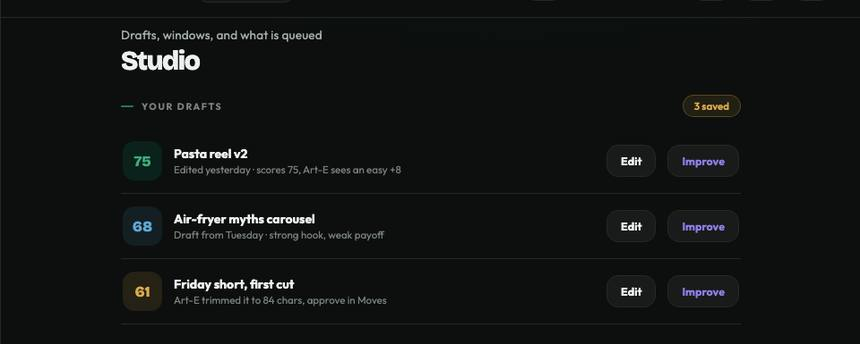
The mockup's Studio drafts. The 75 / 68 / 61 dials and "2.4x" chips ship as risk bands + reasons per the pivot: no absolute scores anywhere.The surface warns when a scheduled or recent post looks weak for this page, and keeps the honest score-board of what the model said vs what happened.
- Warnings appear only where the validated precision floor holds; borderline stays silent
- Honest empty + low-confidence states, wired to the live API
- Zero winner language: no viral badges, no reach forecasts, no "predicted wins"
- No timing advice here (that is S9's surface, cut order #1)
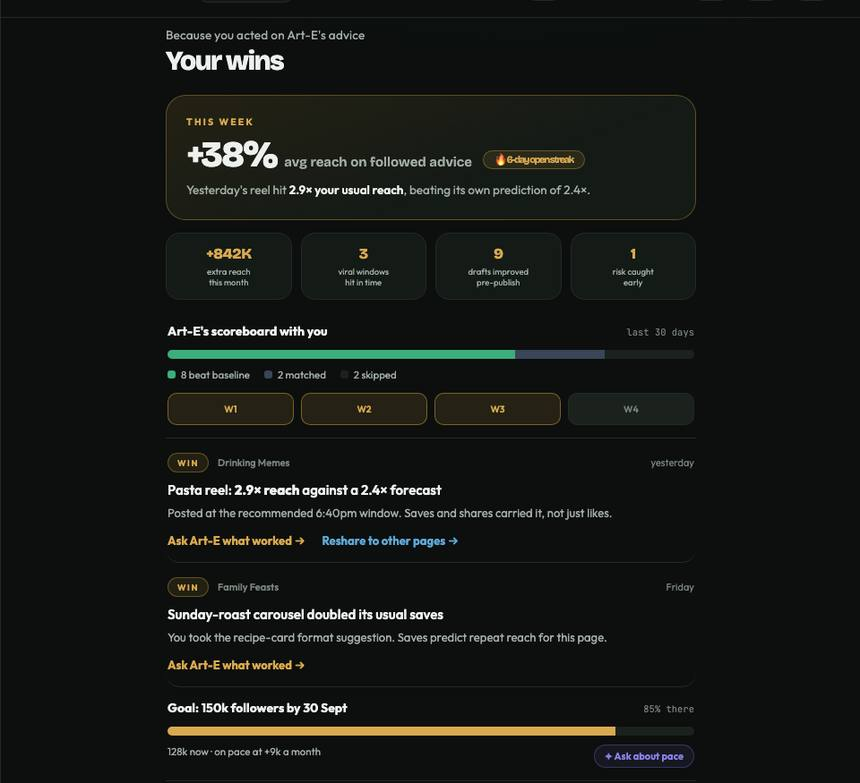
The mockup's "Your wins" view as designed. S8 keeps the receipts idea (predicted vs actual) and retires the winner framing: it becomes the warnings + accuracy surface.Sprint 9 · 9 to 22 Aug 2026 · The habit hook, the watchdog, the quiet moat
The mission in one sentence: turn each page's own rhythm into a concrete repeatable action (Best Times: the daily-habit hook), put a watchdog on every model we have shipped so nothing rots silently, and quietly start the network moat (the Discovery match score, algorithm only, no UI yet). S9 overlaps S8's second week by design: the models build while S8's surfaces wire. Cut-order honesty: Best Times is cut #1 if the date ever slips, so its scope stays tight and its value gets proven, not assumed.
The whole sprint in five moves
Everything below on this tab is detail. This is the sprint: five moves, in order.
What goes in, what comes out
| Capability | What goes in (inputs) | What it actually looks at | What comes out (outputs) |
|---|---|---|---|
| Best Times | The page's own publish timestamps (intraday, so this works on a daily API) · per-slot engagement outcomes, era-consistent · post format mix · history depth | 24h × 7d slots, normalised per slot so one viral post cannot fake a hot cell · pooled day-part cells with shrinkage at low volume · Prophet weekly seasonality per page (daily seasonality off, log1p + winsorise first) · changepoints on residuals for drift | The heatmap (cells with 5+ posts only) · top slots with confidence + sample count · one plain-English line · a "rhythm changed" drift signal. Never: a recommendation from platform defaults alone, a cell faking precision it does not have, timing advice on any other surface |
| Drift watchdog | Every production model's live outputs (confidence distributions + label mix) · frozen training baselines, keyed by era · a small stratified sample of human / DeepSeek spot-checks | Not a model: statistics. KS tests on the models' own outputs · no-label accuracy estimation (ATC) · the joint rule: alert only on drift AND a quality drop together · false-discovery control across all alerts | healthy / watch / slipping per model on the dashboard · the documented trip action (retrain flag + audit routing) · an estimated live accuracy. Never: an alarm on the era break, an alarm on drift alone (that is how alarms get ignored) |
| Discovery matching | De-identified commenter × page co-occurrence (comments are its raw material) · page category + size | The weighted projection (hyperactive commenters diluted) · edges significance-filtered against a null model · Adamic-Adar similarity + Louvain audience communities + category match + size proximity, blended by the frozen v1 recipe | A 0-100 match score per candidate pair, each component doubling as a reason string, served tenant-scoped behind the API. Never: a client-facing cross-page claim (until it holds on their own ladder), a stored commenter id after projection |
Lock these first
Best Times outcomes and the match graph read the era-flagged engagement series. If the LOKI migration (S8 day-zero) is not landed by 9 Aug, or D0 is still open, S9's model work has nothing honest to train on. Escalate on day 1, do not build around it.
What counts as "posts in recommended slots did better" on held-out weeks: the metric, the control, and the number, written down before anyone sees the validation output. Same discipline as the NLP baseline test. Includes the confounding control (below).
Bulk weekly refresh vs on-demand per request. A typical page is cheap; 20 pages x per-request refits is not. The pipeline (VD-MLP-009A) cannot be built until the pattern and its budget are set.
When the watchdog says a model is slipping: flag for retrain, route more traffic to audit, notify, or all three. Undefined trip actions become ignored alarms. Written into VD-AI-009B and reviewed weekly with Rafeh.
The 0-100 Discovery score's ingredients and weights (audience overlap, affinity, category, size proximity), frozen as v1 before serving. Per-factor breakdown surface stays Fast-Track. Validation protocol: Lewis judges the top 5 matches per pilot page before any score leaves the API.
Workstream A · Best Times (the habit hook)
Your audience has a rhythm. We read it from your own history, honestly.
Platform-default windows are a sanity floor only; Art-E never recommends off them alone MR-7.1. The real answer is the account's own 24h × 7d heatmap, computed from its own posts and normalised per slot so one viral 3am post can never paint a misleading hot cell MR-7.2. Publish timestamps are intraday even though Meta's metrics are daily, which is exactly why this feature is buildable when minute-scale velocity is not.
Inputs and outputs
| Direction | What | Rules |
|---|---|---|
| Eats | The page's publish timestamps (intraday) · per-slot engagement outcomes from the era-flagged series · post format mix per slot · page history depth | Era rule applies: outcomes never pooled across the 15-Jun break. Leakage-safe windows in the feature pipeline |
| Produces | The 24h × 7d heatmap · top recommended slots with calibrated confidence · one plain-English line ("your audience is most active Thursday 7 to 9pm") · a drift signal when the rhythm changes | Cells under 5 posts are silent, not greyed out MR-7.4 MR-2.5. Sparse pages get "not enough history yet", never a misleading grid |
| Never | Recommendations from platform defaults alone · timing advice on the Predictions surface (that separation is deliberate MR-7.6) · a guarantee | Filza's disclaimer pattern from S8 applies: guidance, not a guarantee (VD-LEGAL-009) |
Flow · from history to a recommended slot
The honesty gate: proving lift without fooling ourselves
The confounding trap: posts published at good times may simply be better posts, and Facebook's own measurement research shows observational methods mislead even with rich controls. So validation is within page, on held-out weeks, controlling for content type (the FUSION label), against the E1 pass line committed to the repo before scoring (example shape: median within-page lift above zero, positive on at least 13 of 20 pages, sign test p under 0.05, accumulated over 6+ held-out weeks). Placebo checks run every time: permuted slot labels and a stale 8-week-old heatmap must show NO lift, or the metric is confounded. Power reality at ~44 posts/month: single-week checks cannot detect lifts under ~20%, so results report intervals over accumulated weeks, never a one-week verdict.
Two spec upgrades from the research: (1) a 168-cell grid needs 4+ months of posts to escape sparsity at our volume, so v1 recommends pooled day-part × day-type cells with shrinkage toward the page mean, weekday and weekend rows kept separate (audiences genuinely shift ~2h later on weekends), exact-hour cells only where the samples exist. (2) Heatmaps are perishable: timing value is relative to current follower feed activity, so cells expire on the weekly refresh, and a drift trip forces a rebuild with an honest "rhythm changed, re-learning" state in the UI. If lift does not clear the line, the heatmap still ships as a descriptive view; the recommendation waits until it earns its confidence.
Research foundation · every link verified 28 Jul 2026
Personalised per-account schedules from post-to-reaction histories, deployed in production on ~0.5M users: up to 17% reaction gain on Facebook (4% on Twitter). The academic license for Best Times, and the ceiling for our pass line: expect 0 to 15%, never promise 17. Needs only reaction/comment/share timestamps: all survived the metric kill.
Timing works by beating feed competition, not hitting a magic clock hour: the optimal moment depends on current follower activity. Why heatmaps are perishable and drift-invalidated, not carved in stone.
~132K resubmissions of identical images: content dominates; community, title and time are secondary but real. The natural-experiment design (same image, different slot) is the model for our content-confound check on recycled meme formats.
Audience rhythms are stable and circadian, and the morning peak shifts ~2 hours later on weekends. Why weekday and weekend rows never pool.
On real Facebook fan pages, timing moved comments more than likes. Supports per-metric slots (comment-best vs reaction-best) as a v2 candidate, and its tiny sample mirrors our pilot scale: the 5-post silence rule is the right guard.
The fit recipe: piecewise trend + Fourier seasonality, native tolerance for missing days (pages that skip days need no imputation). For us: weekly seasonality only (Fourier order 3), daily seasonality OFF (meaningless on daily-grain metrics; hour-of-day belongs to the timestamp heatmap), yearly only with 2+ years of history.
Prophet rarely beats classical baselines (their comparison: RMSE 248 vs ARIMA 216). So every per-page Prophet fit must beat a seasonal-naive / STL baseline on rolling-origin error before its output is shown; ship the simpler decomposition where it loses.
Squared-error decomposition lets one anomaly bend the whole seasonal profile. Meme pages are anomaly generators by design: log1p-transform + winsorise per page before any fit, the series-level twin of per-slot normalisation.
Documented Prophet weakness: no autoregressive context, so it ignores yesterday. For drift purposes: watch residual autocorrelation or add a lagged regressor; a rhythm change shows up there first.
The causal upgrade if pilots opt in: alternate week-blocks of follow-the-recommendation vs business-as-usual on the same page, blocks long relative to viral carryover, randomisation inference for n≈20, analysed intention-to-treat. With Gordon et al (Facebook, Marketing Sci 2019): observational lift stays labelled observational, and Nosek et al (PNAS 2018): the pass line goes in the repo before scoring.
Workstream B · The model-health watchdog
Every model we ship can rot silently. From S9, none of them can rot invisibly.
Five NLP heads, the fusion classifier, and now the best-times model run in production with no ground-truth labels arriving. The watchdog monitors what CAN be observed without labels: the live confidence distribution and label mix of every model against its training baseline, with stratified spot-checks turning "drift suspected" into "accuracy measured". The S6 principle holds: alert only on drift AND a quality drop together, never on drift alone, or the team learns to ignore the alarm.
Flow · from live predictions to a red light someone acts on
Drift is measured, not assumed: the stratified spot-check sample (weighted toward low-confidence predictions) is what turns a distribution shift into an estimated accuracy number, cheaply. The watchdog state is per model, and "slipping" must be visible before a pilot notices: that is the whole point of VD-DASH-009.
Research foundation · every link verified 28 Jul 2026
The best shift detector in a broad benchmark is the simplest: KS tests on the model's own softmax outputs (BBSDs), Bonferroni-corrected. Exactly what VD-AI-009B monitors: the confidence distribution, per class, vs the training baseline.
Estimates how the live label mix moved using only predictions + the training confusion matrix. For us: a diagnostic reason string ("more toxic-looking comments this week"), not a correction, since meme-culture drift violates its pure-label-shift assumption.
Learns a confidence threshold that estimates live accuracy with no labels. The watchdog's quality-proxy half: alert = shift test fires AND ATC-estimated accuracy drops below the pre-declared line. Backtest ATC against the June era break before trusting it.
Stratify spot-checks by confidence bucket, over-sample the low-confidence strata, reweight to an unbiased estimate: ~4x the effective audit size of the same weekly review budget. The design for our human/DeepSeek spot-check channel.
The architecture template: monitoring runs async on logged outputs, never in the inference path, and the detectors (KS, MMD, BBSD) exist as maintained implementations in alibi-detect. Do not hand-roll the statistics.
Maintains P(rhythm changed) online: maps straight onto our odds-with-reasons house style for the Prophet drift signal. Run on residuals, never the raw series (leftover weekly seasonality is the main source of periodic false alarms), with a heavy-tailed observation model so a viral spike is not a mean shift.
Exact segmentation in linear time: essentially free on our tiny per-page series, so it runs as the offline confirmation pass in the weekly job. The penalty constant is the one pre-declarable false-alarm knob. With Fearnhead + Rigaill 2019 (only bounded losses survive extreme outliers) and ruptures as the production library.
Default hyperparameters demonstrably underperform, and even human annotators disagree on where changepoints are. So: tune the hazard and penalty on a small annotated set of our own pages before launch, and surface drift as a confidence band, never a certainty.
The assembled watchdog recipe: weekly async job per model · era-keyed baselines frozen at training time · BBSDs KS tests + ATC accuracy estimate · alert only on the joint condition against pre-declared lines · false-discovery correction across the whole alert family (5+ models × several tests, or alarm fatigue wins) · forced changepoint at the 15-Jun era boundary so Meta's API change can never masquerade as organic drift · per-page drift verdicts require 50+ observations, the watchdog's twin of the 5-post rule.
Workstream C · Discovery match v1 + the honest velocity spec
The match score: which pages belong together, ranked 0 to 100
The network-first decision moved Discovery into the MVP with zero scope cuts elsewhere, paid for by Muteeb owning the slice. S9 builds the algorithm only: the UI (Matches tab, VD-218) lands in S13. Privacy rule inherited from AFFINITY-011: the co-engagement graph is de-identified at ingest, before any data leaves the pipeline.
How the score is built (VD-AI-013B)
| Step | What happens | Notes |
|---|---|---|
| 1 · Graph | Bipartite commenters × pages graph from de-identified comment co-occurrence (S7 AFFINITY-011), projected to page-page edges weighted by shared audience | Cross-page graph = VD-AI-013A. Overlap measures must correct for page-size bias (a tiny page overlaps "everything") |
| 2 · Score | Combine audience overlap + affinity strength + category match + size proximity into one 0-100 match score per candidate pair | Recipe and weights frozen as v1 (E4); per-factor breakdown surface stays Fast-Track |
| 3 · Validate | Lewis judges the top 5 matches per pilot page: do they make domain sense? Recorded review, pass before serving | Precision-at-5 with a domain expert is the honest metric when no click feedback exists yet |
| 4 · Serve | Scores exposed through the Discovery v1 endpoints (VD-AGG-API-013), tenant-scoped, consumed by the S13 Matches tab | Cross-page patterns stay model inputs, never client-facing claims about their page MR-2.9 |
The velocity spec, carried honestly (pending ticket ids)
From the S8 research: minute-scale early warning is dead on a daily API, and the substitute is specced here so it stops being a hand-wave. The day-2 maturity grader: grade every post at day 2 against its predicted day-30 within-page percentile, starting with a per-page log-linear scaler (Szabo-Huberman) and upgrading with the [day-1, day-2] daily-delta vector of views + shares + comments + reactions (Pinto et al: ~21% error cut over plain scaling). It depends on the weekly maturity re-poll (Faheem + Muteeb, designed, in the escalation tracker) and on Faheem's page-level viral-metric probe, which decides whether anything richer is ever possible. This is the honest ancestor of Performance Radar: not built this sprint, specced this sprint, so S10 planning can size it with real numbers.
Research foundation · every link verified 28 Jul 2026
Unweighted projections throw away most of the structure. Resource-allocation weighting splits each commenter's contribution across every page they engage, so one hyperactive meme commenter cannot inflate every pairwise overlap.
Adamic-Adar (down-weight shared neighbours by 1/log degree) beats raw common neighbours and Jaccard across every tested network (54.8x random at best). The core graph signal for the 0-100 score, cheap enough for a weekly run over 3.3M comments.
The menu of similarity indices, and one trap flagged for us: the overlap coefficient's min-degree denominator makes every tiny page look identical to any big page that contains its audience. Handle size with an explicit size-proximity feature instead.
The closest published analogue to Discovery, and its central lesson: filter every co-occurrence edge against a null model before scoring: raw overlap counts produced "a completely different ranking" than significance-tested ones. The graph-side twin of the 5-post silence rule.
Audience communities on the filtered projection: same-cluster membership is both a score component and a human-readable reason ("shares an audience cluster with pages you track"). Wildly overpowered at 20 pages, which means it stays fast as Discovery grows.
The production blueprint at scale: sparse, interpretable community vectors from a bipartite graph, similar-producer retrieval by cosine similarity, the community coordinates doubling as reasons. Our upgrade path when candidates outgrow the pilot set.
With zero click feedback before launch, Discovery is a "Find Good Items" task: expert-judged precision-at-k with the pass line declared before results (e.g. at least 60% of top-5 matches judged relevant), one metric, not a battery. That is exactly Lewis's E4 review.
The assembled match recipe: de-identified bipartite graph → resource-allocation weighted projection → significance-filter edges against a hypergeometric null → Adamic-Adar as the graph signal + Louvain community bonus + category match + size proximity → the frozen 0-100 blend, every component doubling as a reason string. Privacy posture: after projection, store only pairwise counts, never commenter ids. One scale honesty note: this literature runs on graphs orders of magnitude larger; at 20 pages, edge significance and honest sparse states matter far more than algorithm choice.
Who does what in Sprint 9
Per-page, per-metric seasonality with Prophet; recommended slots + calibrated confidence; per-slot normalisation so one viral post cannot skew a cell; the drift signal when a page's rhythm changes.
Live confidence + label-mix tracking vs training baselines for every production model; thresholds that mean "slipping"; stratified spot-check sampling; the documented trip action (E3).
Gold sets for best-times (lift regression, sparse pages, strong vs flat rhythms) and the watchdog (seeded-drift sensitivity, false-alarm control).
Leakage-safe per-slot feature assembly; tenant-scoped serving API cached per page/week; Prophet on the E2 schedule (bulk, not per request); drift signals through the one metrics API.
Page-page similarity over the de-identified co-engagement graph + attribute similarity, combined into the frozen v1 0-100 score; served via the Discovery endpoints for S13.
The 24h × 7d heatmap + the plain-English Art-E slot recommendation with its confidence, shared account/range selector from Analytics, honest "not enough history yet" state.
Watchdog state per model (healthy / watch / slipping), the best-times quality + Prophet drift signal alongside the NLP models; slipping is the loudest thing on the page.
What a useful recommendation looks like, written before build; owns E1 (the pre-declared lift line) with Faheem; runs the weekly drift review; keeps cut-order #1 scope tight.
Best Times page + watchdog on the QA board with per-feature pass/fail, model QA pulled from Faheem's suite, go/no-go current.
The KPI definition doc (D7 active, D30 active, alert-engage rate, posts-acted-on per week: numerator, denominator, exclusions), and the "why open this tomorrow?" checklist applied to every feature before ship. Confirms Best Times is a concrete repeatable action, the habit hook.
Posting-time recommendations framed as guidance not guarantee, consistent with the S8 disclaimer pattern; confirm best-times + drift processing adds no new personal-data handling beyond the DPA.
Per-page Prophet cost, the E2 bulk-vs-on-demand decision with Muteeb, alarms so best-times + drift compute cannot exceed budget, monitoring-subscription waste review, Q3 budget refresh to Alex and Asad.
Which pilot pages live or die by timing vs where it barely matters; sense-check the model's slots against what each pilot already knows; flag thin-history pages; judge the Discovery top-5 matches (E4); pick the best Best-Times demo pilot.
The two weeks
What Sprint 9 is deliberately NOT doing
Sprint 9 definition of done
- Best Times live: heatmap normalised per slot, cells under 5 posts silent, sparse pages honest, recommendation in plain English with confidence and sample count.
- Lift proven or scoped down: held-out-week validation against the pre-declared E1 line, within page, controlling for content type; if it fails, the heatmap ships descriptive and the recommendation waits.
- Watchdog live: every production model has a health state; a seeded drift trips it, noise does not; the era break never reads as organic drift; the trip action is documented and rehearsed.
- Dashboard: slipping is visually unmissable in under two seconds, behind the team login, desktop and mobile.
- Match v1: 0-100 scores served tenant-scoped from the frozen recipe; Lewis's top-5 domain review recorded as a pass.
- The velocity spec written: day-2 maturity grader specced with owners and dependencies, ready to size in S10 planning.
- Money: Prophet + drift compute on the E2 schedule inside budget, alarms proven, Q3 refresh circulated.
- Words: the recommendation disclaimer pattern confirmed in the UI and filed (Filza).
- Evidence: Rafeh's acceptance on real pilot data; Alex's KPI doc + habit checklist in force; Lewis's demo pilot named.
How we prove it: benchmarking + the rules doc
How benchmarking helps us
It is what stops us shipping a beautiful, wrong heatmap. Where each S9 feature gets proven:
| Best Times | The lift line is declared before scoring (median within-page lift, held-out weeks, content-controlled). Placebo checks every time: permuted slots and a stale 8-week-old heatmap must show NO lift, or the metric is confounded. Fails the line? Heatmap ships descriptive, recommendation held: stated on the page |
| The watchdog | It gets benchmarked itself: a seeded drift must trip it within one weekly cycle, pure noise must not, and the era break is structurally incapable of tripping it. An alarm nobody trusts is worse than no alarm |
| Discovery matching | Expert precision before exposure: Lewis judges the top-5 matches per page against a pre-declared bar, recorded. The moat starts honest or it does not start |
The payoff compounds: by launch we hold months of logged predicted-vs-actual receipts across every feature: the exact evidence pilots and investors ask for.
How Rafeh's Master Rules doc helps us
For S9 it is nearly a spec: the timing rules were written before the feature, so engineering starts from settled law:
| MR-7.1 | Platform default windows are a sanity floor only; Art-E never recommends off them alone |
| MR-7.2 | The real answer is the account's OWN 24h × 7d heatmap, normalised per slot: the no-viral-hot-cell rule is law, not taste |
| MR-7.3 MR-7.4 | Timing tables weekly, content tables monthly (the asymmetry is deliberate); under 5 posts a slot is silent, not greyed out |
| MR-7.6 | Timing advice and band prediction are separate surfaces with separate cut order: the band chip never mentions a slot |
| MR-2.9 | Cross-page patterns may feed models; they may not become client-facing claims until they hold on the page's own ladder with 5+ samples: the gate on Discovery matching |
And the watchdog inherits the S6 monitoring rule the doc canonised: alert on drift AND quality-drop together, never drift alone. When a reviewer asks "why is this cell empty" or "why no alarm", the answer is a rule id, not an opinion.
What is LIVE after Sprint 9, per the mockup
In one sentence: after this sprint a pilot knows when to post, from their own rhythm, and we know the moment any model starts slipping.
One pilot-facing feature (the habit hook), one internal surface that protects everything we have shipped, and one engine deliberately kept invisible until S13. Same format: mockup screen, feature, how much ships now, pass/fail.
The page's own rhythm as a 24h × 7d heatmap plus a plain-English recommendation with its confidence and sample count. The recommendation line and the heatmap read the same tables, so words and colours can never disagree.
- One viral 3am post cannot paint a hot cell (per-slot normalisation, verified)
- Cells under 5 posts are silent; low-volume pages get pooled day-part cells, never fake exact-hour precision
- Recommendation clears the pre-declared lift line on held-out weeks, placebo-checked
- Heatmaps expire weekly; drift forces a rebuild with a visible "re-learning" state
- Timing advice lives ONLY here; guidance-not-guarantee on every recommendation
- The acceptance moment: a pilot points at the brightest cell and says "post here", unprompted
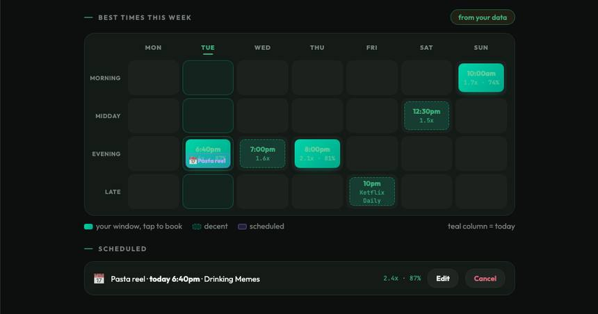
The mockup's "Best times this week" grid: teal = your window, tap to book. S9 makes every cell come from the page's own history, honestly.- A seeded drift trips the watchdog within one weekly cycle; pure noise does not
- The 15-Jun era break NEVER reads as organic drift (structurally excluded)
- "Slipping" is the loudest thing on the page, readable in under two seconds
- The trip action (retrain flag + audit routing) documented and rehearsed once, end to end
- Recipe v1 frozen before any score is served; edges significance-filtered
- Lewis's top-5 review clears the pre-declared precision bar, recorded page by page
- Tenant-scoped serving; zero client-facing cross-page claims; only pairwise counts stored, no commenter ids
Sprint 10 · 16 to 29 Aug · Why did that post do that?
In one sentence: when a pilot asks "why did that post spike?", give them a screen that answers it, and quietly start the page-to-page graph that Discovery will need in S13. Plus the first real retrain, so the models stop being frozen artefacts.
The whole sprint in six moves
Everything below on this tab is detail. This is the sprint, in order.
What goes in, what comes out
| Capability | What goes in | What it looks at | What comes out |
|---|---|---|---|
| Post drill-down | One post id | Everything already computed for it: insights row, comment labels, FUSION content type, video signals, the flop prediction we logged and the outcome that arrived | One screen that explains a spike or a flop, including our own prediction vs what happened. Never: a new model, a new number |
| Structural fingerprint | De-identified commenter cohorts per page (hashed, minimum cohort size) | Who overlaps where, aggregated. Nothing at individual level leaves the pipeline | A cheap append-only per-page fingerprint row per run. Never: a commenter id, a cohort under the minimum |
| Cross-page graph | Fingerprints + S7 affinity edges | Bipartite commenters × pages, projected to page-page edges, each edge significance-tested against a degree-preserving null before it counts | A sparse tested graph (Bonferroni core + FDR shell) feeding S13 Discovery. Never: a dense raw-Jaccard heat map presented as fact |
| Retrain dry-run | Everything logged since S4 (uncertain cases, thumbed-down, new outcomes) | The same time-split harness as S8 | A candidate model + a verdict: promote or keep production. Never: an automatic promotion |
Research foundation · links verified 29 Jul 2026
Two questions decided by evidence this sprint: which graph store, and how to stop raw overlap lying to us.
At 34M vertices / 217M edges, Postgres and Virtuoso gave the lowest latency of all systems tested, beating Neo4j, with up to an order of magnitude faster writes. Our graph is 20 nodes. Verdict: no graph database. The paper also flags the real trap: the abstraction layer, not the store, is where orders of magnitude get lost.
Test every projected edge against a degree-preserving hypergeometric null, then correct for multiple testing (Bonferroni core + FDR shell). With 20 pages there are 190 pairs, so the Bonferroni threshold is 0.05/190. This is how a dense heat map becomes a defensible sparse graph.
Raw Jaccard between a 500K-commenter page and a 5K-commenter page is depressed by size alone, so an unadjusted 0.04 can be more surprising than an unadjusted 0.15. The centered coefficient makes the 190 cells comparable: the graph-layer version of our per-page-baseline rule.
Infra 4: an automated system must bless or veto a model before it serves, using two thresholds: loose ones against validation (slow decay) and tight ones against the previous version (sudden drops). Exactly the shape of our retrain-promotion gate.
What this changes in the build: no Neo4j/Neptune spend at pilot scale; every graph edge carries a p-value and a correction before it is called an overlap; and the retrain dry-run gets a written bless-or-veto rule (absolute floor plus a no-regression-vs-production delta) instead of a judgement call.
Who owns what
| Who | Tickets | In one line |
|---|---|---|
| Asad | VD-INFRA-010 | The drill-down screen plus the plumbing that makes it fast: Redis caching for hot reads, SQS queues so slow jobs never block a click |
| Muteeb | VD-MLP-010 · VD-AI-013A | Structural-fingerprint capture (de-identified, cheap, append-only) and the significance-tested cross-page graph that S13 Discovery consumes |
| Faheem | VD-AI-010-MVP | The first retrain dry-run on everything accumulated since S4, with the written promote-or-keep gate (this also merges S12's benchmark refresh) |
| Filza | VD-LEGAL-010 | The commenter de-identification policy and the reverse-identification risk note, both signed before graph work ships |
| Rafeh | VD-QA-010 | Owns what a page owner needs to see to understand a spike; runs S10 acceptance; holds the research-tier line |
| Alex | VD-STRAT-010MVP | The "pathways, not dimensions" story and the 30-second demo script for the graph, now that it is real rather than a tease |
| Jill | VD-OPS-010MVP | Graph-compute and fingerprint-storage projection, plus the MVP graph-store cost memo (the research above narrows it to the cheap option) |
Deliberately NOT doing
Definition of done
- Drill-down live: opens under a second warm, every number reconciles with Analytics, and it shows our own prediction next to the outcome.
- Plumbing: Redis caching and SQS queues in place, measured, with the cache-hit rate recorded.
- Fingerprint capture running and de-identified per the signed policy, cost confirmed as a cheap append.
- Graph built with tested edges: no edge ships without passing significance plus multiple-testing correction.
- Retrain dry-run completed with a written promote-or-keep verdict on the gold set (either outcome is a pass; an unmeasured retrain is not).
- Filza's policy signed before the graph work, not after.
- Store decision written down with its cost memo.
What is LIVE after this sprint, per the mockup
In one sentence: a pilot can click any post and understand it, and we can prove our own predictions were right or wrong.
One new screen plus two engines that stay invisible this sprint. Same format: mockup screen, feature, how much ships now, pass/fail.
Click a post in the feed and get the whole story in one place: how it did, what the comments felt like, what the image and video signals said, what we predicted before it went out, and whether we were right.
- Opens in under a second on a warm cache (this is what the Redis layer is for)
- Every number reconciles with Analytics: two screens never disagree about the same post
- Shows our own receipt: the prediction we logged, the band we showed, and the outcome that arrived
- Honest states for posts with no signals yet, and for the era break
- A pilot can answer "why did this spike?" without asking an engineer
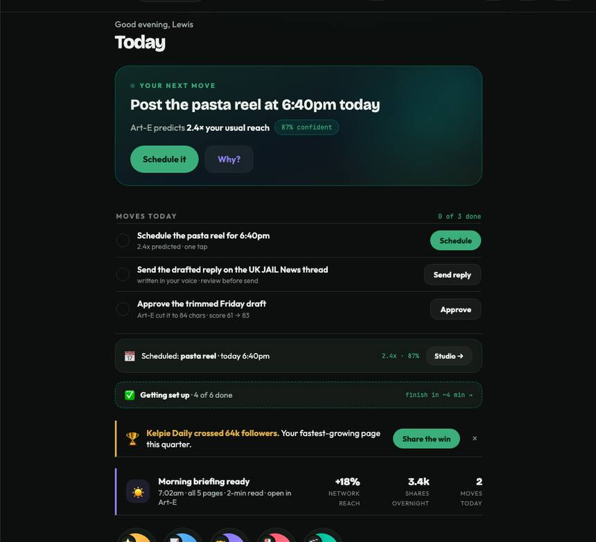
The Today feed: each post card is the door into the drill-down. S10 makes the door open onto real, reconciled data.The quiet compounding asset: every run appends a de-identified structural fingerprint per page, and the graph tests every candidate edge for significance before it counts as a real overlap.
- Every edge passes a degree-preserving significance test (raw Jaccard alone never ships): Bonferroni core plus FDR shell
- De-identified at capture per Filza's signed policy: hashed identities, minimum cohort, no commenter ids stored after projection
- Cheap append: cost per run confirmed inside Jill's storage budget
- The store decision is made and written down (Postgres/NetworkX at pilot scale unless the numbers say otherwise)
Sprint 11 · 20 Aug to 2 Sep · Watch my back
In one sentence: catch a developing crisis on a pilot's page while it is still small, and tell them in one card what is wrong and what to do about it. This is the highest-trust feature in the MVP, and the one where a false alarm costs the most.
The whole sprint in six moves
Everything below on this tab is detail. This is the sprint, in order.
What goes in, what comes out
| Capability | What goes in | What it looks at | What comes out |
|---|---|---|---|
| Crisis detector | Incoming comments with their existing NLP labels (binary toxicity, sentiment) + the page's own history | Burst structure, not raw counts: arrival rate of flagged comments vs this page's same-hour-of-week baseline, per archetype, requiring the burst to persist across consecutive windows | A candidate incident with its evidence and severity. Never: an alert from a single spiky window, a global toxicity threshold applied to every page |
| Alert engine | A candidate incident | The five elements a warning needs: what fired, on which page, the hazard vs baseline, ONE piece of guidance, and when | One card: problem + one action + citations to the posts and comments behind it. Never: "your sentiment is down" with no action, an alert without evidence |
| Delivery pipeline | Alert events | Tenant-scoped routing, de-duplication so one incident is one alert, quiet hours | A timely alert in the product and (per prefs) by email. Never: a silently dropped failure; failures retry then park in the dead-letter queue |
How a comment storm becomes one useful card
Research foundation · links verified 29 Jul 2026
Crisis detection is the feature where the research is most emphatic: the false-alarm rate, not the detection rate, decides whether anyone trusts it.
The canonical burst-detection algorithm: a two-state automaton (calm / burst) over arrival rates, with one cost knob controlling how eager it is to declare a burst. The detector core: run it per page on flagged-comment rates, fit the baseline per page, and require persistence across windows.
When true events are rare, the false-alarm rate, not the detection rate, is the binding constraint: a useful alarm needs a false-alarm rate around 1 in 100,000. 20 pages checked hourly is ~480 checks a day, so even 1% per-check noise buries every real incident.
In hospitals 72% to 99% of clinical alarms are false, and the resulting desensitisation has killed patients: serious enough to become a national patient-safety goal. The hard evidence for why we tune for precision and let small storms pass.
"Every page should be actionable": if a robotic response would do, it should not page a human. The engineering basis for our alert contract: problem plus one action, or it is not an alert.
Coordinated pile-ons are human, not spam, so spam-style defences fail; the useful signal is the burst pattern plus who is arriving. The closest published analogue to a meme post going viral in the wrong community.
Alerts work when they carry all five elements: source, hazard, location, guidance, time. Length matters far less than completeness. This is literally our alert card template.
What this changes in the build: baselines are per page and per hour-of-week (not global thresholds); the detector must see a burst persist across consecutive windows before it fires; the precision bar is agreed per archetype with Lewis and Rafeh before tuning; and every card is checked against the five-element template in acceptance.
Who owns what
| Who | Tickets | In one line |
|---|---|---|
| Faheem | VD-AI-011A · 011B · QA-AI-011 | The detector (per-archetype burst detection), the alert engine (problem + action + citations), and the test set built from real historical incidents plus normal-but-spiky days |
| Asad | VD-MV-SETTINGS-TOGGLE | The Alerts surface: live list, problem+action cards, the rules builder a non-technical pilot can actually use, and the master Art-E toggle |
| Muteeb | VD-MLP-011 | The near-real-time pipeline: fast enough to be timely, with retries and a dead-letter queue so nothing fails silently |
| Rafeh | VD-PM-011 · VD-QA-011 | Owns what a trustworthy alert looks like, the acceptable false-alarm rate, the must-catch types, and the rules-builder UX |
| Lewis | VD-LEWIS-011 | The calibration that makes this work: what is genuinely a crisis vs normal rough-and-tumble per pilot page, and the real historical incidents that become test cases |
| Filza | VD-LEGAL-011 | The crisis-comms copy patterns reviewed for legal language (we are telling a business their reputation is at risk) plus notification SLAs |
| Alex | VD-STRAT-011MVP | The "saved a brand" case-study format, written from a real historical incident the detector would have caught |
| Jill | VD-OPS-011MVP | Alert-delivery (SES) volume and cost, kept flat by de-duplication; on-call seats trimmed to who needs them |
Deliberately NOT doing
Definition of done
- Detector live with per-page, per-hour-of-week baselines and per-archetype sensitivity.
- False-alarm rate measured and under the agreed bar on the historical test set; must-catch incidents caught. If it misses the bar, it ships silent.
- Every alert: plain-English problem, ONE action, citations to the posts and comments behind it.
- Alerts page + popover live, matching the mockups, with quiet hours and de-duplication working.
- Rules builder usable by a non-technical pilot without help.
- Pipeline resilient: retries then dead-letter queue with an owner; no silent drops.
- Legal: crisis copy patterns reviewed by Filza; SLAs aligned with the paid-tier contract.
- Evidence: Lewis's per-page calibration recorded; Alex's case study written from a real incident.
What is LIVE after this sprint, per the mockup
In one sentence: a pilot gets told while a storm is still small, in one card, with the evidence and one thing to do.
One new page plus the live popover that interrupts only when it should. Both mapped to the mockup screens they were designed against.
The triage surface: what needs you now, what is an opportunity, what is just for your briefing. Each card names the problem in plain words, cites the posts and comments behind it, and offers ONE action, including a drafted reply where that is the right move.
- False-alarm rate under the agreed per-archetype bar, measured on the historical test set, or the detector stays silent
- Catches the must-catch incident types Lewis identified from real pilot history
- Every alert cites its evidence: a pilot can click through to the actual comments and judge for themselves
- Every alert carries exactly ONE suggested action (an alert that only reports a metric fails acceptance)
- A non-technical pilot can tune their own thresholds in the rules builder without help
- Quiet hours respected; one incident produces one alert, not a stream
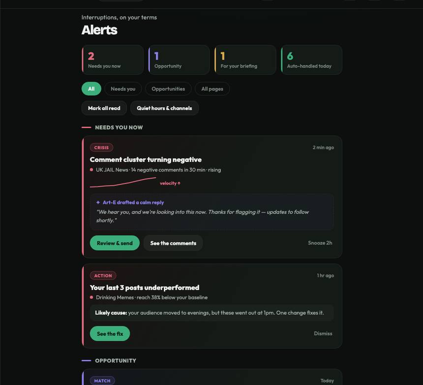
The mockup's Alerts page: "Needs you now" cards with velocity, a drafted calm reply, and "See the comments". S11 makes every one of those cards real.When something genuinely needs attention now, it appears over whatever the pilot is doing, with the same problem-plus-action contract as the page. When it does not, nothing interrupts.
- Alert arrives fast enough to still matter (timeliness target agreed with Rafeh and measured)
- A failed sync or scoring job retries, then parks in the dead-letter queue with an owner: never a silent drop
- No duplicate interrupts for the same incident
- Tenant-scoped end to end
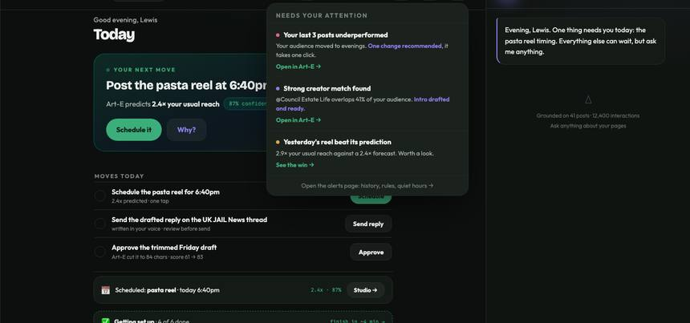
The popover as designed: it interrupts for one reason only, and it arrives with the fix already drafted.Sprint 12 · 27 Aug to 9 Sep · The boring sprint that saves the launch
In one sentence: nothing new appears on screen. We build the observability that makes every later sprint debuggable, capture audience features so the data compounds while segmentation stays Phase-2, and start the Discovery feed pipeline S13 needs. Added 5 Aug: this sprint also lays the plumbing for Alex's Progressive Intelligence architecture: a per-page analysis queue that can run the last 90 days first, then walk history backwards in the background, in his priority order. S21's onboarding flow consumes it; if the queue is not built here, onboarding becomes a big-bang analysis and the "learning, not loading" first hour is lost. The honest framing: this is the sprint that buys the other twelve their safety net.
The whole sprint in five moves
Everything below on this tab is detail. This is the sprint, in order.
What goes in, what comes out
| Capability | What goes in | What it looks at | What comes out |
|---|---|---|---|
| Observability | Errors, uptime probes, structured logs from every service | Nothing modelled: this is plumbing that makes causes findable | A searchable trail and an alerting path. Never: an unlogged production error |
| Audience-feature capture | De-identified per-page commenter activity | Aggregate cohort behaviour, appended incrementally | A compounding feature store that Phase-2 segmentation will consume. Never: an inferred special category, an individual-level record, a client-facing segment claim this sprint |
| Discovery feed pipeline | Page metadata + headline metrics + the content fingerprint from S10 | Assembly, not inference: what a page looks like from outside | Auto-generated Business Cards ready for the S13 UI. Never: a card that reveals a cohort under the minimum |
Research foundation · why the boring sprint works
Our own scar tissue is the evidence
This sprint exists because we have already paid for its absence twice. The freshness monitor we built into the QA dashboard surfaced post_daily_insights silently stale for 44 days: nothing errored, nothing alerted, the data just stopped and nobody knew. And the S8 model review found a coverage gap (four months of missing images) that had quietly reversed a conclusion. Both failures share one shape: systems that fail silently instead of loudly. S12 buys alarms: freshness SLOs per table, dead-letter queues on every pipeline stage, structured run receipts, and dashboards that make a missing weekly spike visible at a glance.
The progressive-intelligence queue, from Alex's architecture
Alex's Progressive Intelligence doc (Aug 2026) sets the requirement: analyse the last 90 days first, in priority order (audience identity, top and bottom posts, themes, sentiment, cadence, predictions), then walk history backwards in the background, forever. Engineering translation: a per-page priority queue with resumable jobs, idempotent stages and per-phase completion events the onboarding UI can subscribe to. Built here as groundwork so S21 can consume it as product; the queue pattern (priority buckets, checkpointed backfill) is the same one the nightly snapshot jobs already use, generalised per page.
Who owns what
| Who | Tickets | In one line |
|---|---|---|
| Asad | VD-INFRA-012 | Monitoring, uptime, alerting, and searchable structured logging: the production observability every later sprint leans on |
| Muteeb | VD-MLP-012 · VD-DISC-015 | The de-identified audience-feature capture and the Discovery feed pipeline that auto-generates Business Cards for S13 |
| Filza | VD-LEGAL-012 | The GDPR Article 9 review: confirm we never infer special-category data, and audit existing audience signals for anything discriminatory or re-identifying |
| Rafeh | VD-QA-012 | Acceptance, plus holding the Phase-2 line: segmentation, community detection, influence and churn stay out of the MVP |
| Alex | VD-STRAT-012MVP | The "behaves like a high-performing X" story for later, and confirming the launch narrative does not lean on deferred segmentation |
| Jill | VD-OPS-012MVP | Budget for the monitoring stack and confirmation that both capture jobs stay cheap appends |
Deliberately NOT doing
Definition of done
- Observability live: a production error is findable, with a trace, in minutes by anyone on the team.
- Audience features capturing, de-identified, cheap, and passing Filza's Article 9 review.
- Business Cards generating from real pilot pages, ready for S13 to render.
- The Phase-2 line held: no segmentation, community detection, influence or churn feature reached a surface.
- Costs confirmed for monitoring and both capture jobs.
What is LIVE after this sprint, per the mockup
In one sentence: nothing changes on screen, and that is the point: this sprint is why the next ten do not fall over.
No mockup screens this sprint, by design. The deliverables are the things you only notice when they are missing.
The difference between "a pilot reported a problem, we will investigate" and "the error is here, it started at 14:02, here is the trace". Every later sprint depends on this being in place.
- A production error is findable within minutes, with a trace, by someone who did not write the code
- Uptime checks alert before a pilot notices
- Logs are structured and searchable, not a wall of prints
- Cost confirmed inside the run-rate (Jill)
Two cheap append-only jobs that make later sprints possible: audience features that compound while we wait, and the Business Cards that S13's Discovery page will actually display.
- Both jobs are cheap incremental appends, confirmed against Jill's storage budget
- De-identified at capture; Filza's Article 9 review passed: no special-category inference, nothing re-identifying
- Business Cards render correctly from real pilot pages (validated as data, not as UI)
- The Phase-2 line held: no segmentation feature reaches any surface
Sprint 13 · 31 Aug to 13 Sep · The moat becomes visible
In one sentence: Discovery goes live: pilots can browse other pages as Business Cards and see real match scores, with a hard privacy floor underneath and an explicit opt-in in front. This is the growth hook and the hardest-to-copy thing we build.
The whole sprint in five moves
Everything below on this tab is detail. This is the sprint, in order.
What goes in, what comes out
| Capability | What goes in | What it looks at | What comes out |
|---|---|---|---|
| Discovery browse + cards | The Business Card pipeline (S12) + page metadata | Assembly of public-facing facts: category, headline metrics, content fingerprint, peak hours | Rendered cards. Never: a field that could re-identify a small cohort, a card built from under-minimum data |
| Match scores | The significance-tested cross-page graph (S10) + card attributes | The frozen v1 recipe: tested audience overlap + affinity + category match + size proximity, each component doubling as a reason string | A 0-100 score per candidate pair with its reasons. Never: a score served before Lewis's review passes, a cross-page claim about someone's own page without 5+ samples |
| Aggregation API | Pre-aggregated per-page rollups | Query efficiency, tenant scoping, rate limits | Fast analytics + Discovery endpoints. Never: a response that lets a caller derive a cohort under 5 by differencing two queries |
How the graph becomes a match a human trusts
Research foundation · links verified 29 Jul 2026
Discovery is the feature where privacy is the product risk, and where we have no click data to learn from yet.
The origin of our minimum-cohort rule (ours is k=5 over pages). Its motivating number is the warning: 87% of the US population was uniquely identifiable from just ZIP, birth date and sex. Its attack sections are the design brief for failing closed.
8 ratings, 2 of which may be wrong, with dates known to ±14 days, re-identified 99% of Netflix users. Behavioural fingerprints defeat naive anonymity: our Business Cards (cadence, topic mix, engagement shape) are exactly that kind of data, so card fields get coarsened into bands.
The regulator precedent: no cell of 1 to 10 may be reported, and no combination of outputs may allow deriving one. Our floor of 5 sits at the permissive end, which makes the derivability clause (differencing attacks) the part we must implement carefully.
Only 11.8% of consent popups met minimal legal requirements, and removing the opt-out button from the first page raised consent by 22 to 23 percentage points. Our Discovery opt-in must put opt-out on the same screen with equal prominence, or the consent is not valid.
169 expert critics predicted 10,000 users' ratings about as well as collaborative filtering on the full matrix. The precedent for Discovery v1's shape: with no interaction data, a frozen expert-designed recipe validated by a domain expert is a legitimate cold start, not a shortcut.
What this changes in the build: the floor is enforced against derivability, not just single queries; card fields ship as coarse bands rather than exact values; the opt-in screen is designed against the dark-patterns findings (equal prominence, revocable) and reviewed by Filza; and Lewis's precision-at-5 review is the named acceptance gate rather than an informal sense-check.
Who owns what
| Who | Tickets | In one line |
|---|---|---|
| Muteeb | VD-AGG-API-013 | The analytics aggregation endpoints plus the Discovery v1 data endpoints: browse, cards, ranked matches, all tenant-scoped and floor-enforcing |
| Asad | VD-DISC-UI-013 · VD-218 · VD-DISC-UI-015 | The Discovery page: base layout and browse, the Matches / My Collabs / Saved tabs, and wiring the cards to real Business Card data |
| Filza | VD-LEGAL-013 | The privacy floor codified before the API exists: minimum cohort, dropped fields, fail-closed behaviour, plus the Discovery opt-in flow and consent text |
| Rafeh | VD-RAFEH-013E · VD-QA-013 | Owns the Discovery v1 scope, the demo moment, and the QA guard that the anonymisation floor genuinely fails closed |
| Faheem | VD-FINGERPRINT-013 | Keeps the structural fingerprint capture running as live input to the graph, de-identified per policy |
| Lewis | VD-LEWIS-013 | The human gate: would pilots want this, who would they connect with, and do the top-5 matches make domain sense (the recorded review that unblocks serving) |
| Alex | VD-STRAT-013MVP | Distribution-partner candidates and the outbound list, now that the network hook is real |
| Jill | VD-OPS-013MVP | API Gateway + WAF + rate-limit cost model so the public-facing endpoints cannot be abused into a bill |
Deliberately NOT doing
Definition of done
- Privacy floor live and tested: minimum cohort of 5, fails closed, and cannot be defeated by differencing two permitted queries.
- Opt-in genuine: equal-prominence choice, revocable, wording signed by Filza.
- Lewis's top-5 review recorded and passing before any score is served to any pilot.
- Discovery page live matching the mockup: browse, cards, Matches / My Collabs / Saved, with reasons on every match.
- Aggregation API fast enough for the analytics surfaces, tenant-scoped, rate-limited.
- No cross-page claim about a pilot's own page ships without 5+ samples on their own ladder. MR-2.9
What is LIVE after this sprint, per the mockup
In one sentence: a pilot can find pages that share their audience, see why in plain numbers, and ask for a collab.
One large new page, opt-in gated, privacy-floored, and human-validated before a single score is served.
The page that turns our graph into something a pilot wants: cards for pages that share their audience, a match score with its reasons in plain numbers, and a way to save or request a collab.
- Every response respects the minimum cohort of 5 and fails closed, including against differencing attacks (two filters must not reveal what one cannot)
- Lewis's top-5 review clears the pre-declared bar, recorded page by page, before any score is served
- Opt-in is genuine: opting out is exactly as easy as opting in, and it is revocable
- Every match shows its reasons in plain language ("8,200 of your people already follow them"), never a bare number
- Tenant-scoped: a pilot only ever sees what their consent and the floor permit
- Cards regenerate on the agreed cadence with honest fallbacks for thin pages
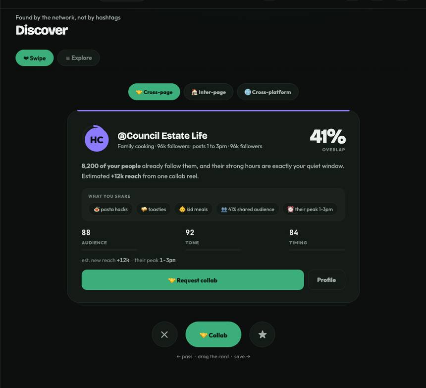
The mockup's Discover screen: 41% overlap, what you share, and the audience/tone/timing breakdown. S13 makes the numbers real and the privacy floor hard.Sprint 14 · 5 to 18 Sep · Everything becomes real data
In one sentence: every number on every screen stops being a placeholder. The dashboard, the home feed and the drafts page all run on the live pipeline, the draft score updates as you type, and the daily loop (the retention engine) is finally the real thing.
The whole sprint in five moves
Everything below on this tab is detail. This is the sprint, in order.
What goes in, what comes out
| Capability | What goes in | What it looks at | What comes out |
|---|---|---|---|
| Live draft scoring | The draft as the user types (debounced) | The same S8 model and features: nothing new is learned, the path is optimised | A band that updates in near real time. Never: a band that flickers on a one-character edit, a score below the minimum-signal threshold |
| Live dashboard + feed | Real pipeline outputs for the tenant | Aggregation endpoints from S13, cached | Every card backed by a real number, with honest states when a signal is missing. Never: a placeholder shown as fact |
| Webhooks | Crisis and draft-scored events | Tenant-scoped routing, retry with backoff, data minimisation (send the alert and a link, not raw personal data) | Reliable delivery to a pilot's endpoint. Never: personal data in a payload, a silent delivery failure |
Research foundation · how mock becomes live without lying
Parallel-run, then cut over: the migration pattern
Every screen moving from mock to live data follows the same three-step discipline, the strangler-fig pattern scaled down: 1) the live endpoint ships behind the mock (both computed, mock still shown), 2) a comparison logs every difference between mock and live for a few days, 3) the screen flips only when the diff log goes quiet. The alternative, flipping screens blind, is how a launch demo shows a number nobody can explain. We have direct evidence the careful path pays: the metric-era migration (marvel PR #7) shipped clean precisely because old and new metrics ran side by side with era flags before anything switched.
Contract tests on every seam
Each screen-to-API seam gets a contract test pinned in CI: the exact response shape the screen consumes, checked against what the API actually returns, so a backend change that would silently blank a widget fails a build instead. This is the same lesson as S8's shared feature-builder (G3), applied to the UI: two codebases that must agree need one written contract, not good intentions.
Who owns what
| Who | Tickets | In one line |
|---|---|---|
| Asad | VD-228 · VD-DASH-WIRE-014 | Wiring the dashboard and home feed fully to live pipeline data, plus the drafts-page polish: score UX, drivers, and the edit-rescore loop |
| Faheem | VD-AI-014B · QA-AI-014 | The live-scoring model path (fast enough for type-time, stable under small edits) and the test suite gating latency plus calibration |
| Muteeb | VD-AI-014-API | The lean webhooks/alerts plumbing: tenant-scoped delivery with retries, deliberately small for 5 pilots |
| Rafeh | VD-RAFEH-014C · VD-QA-014 | Owns the band thresholds validated against real outcomes, the webhook event/payload definition, and confirming the daily loop shows genuinely useful current data |
| Filza | VD-LEGAL-014 | Webhook data terms and the data-minimisation rule: send the alert and a link, never raw personal data |
| Alex | VD-STRAT-014MVP | Sharpening the go-to-market narrative now the daily loop is fully live, and keeping SDK/self-serve billing positioned as post-launch |
| Jill | VD-OPS-014MVP | Budget for webhook delivery and live scoring (much more frequent than batch), with alarms so a spike cannot spike the bill |
| Lewis | VD-LEWIS-014 | Which page owners would actually call our API (grounding the webhook scope in reality) |
Deliberately NOT doing
Definition of done
- Zero placeholder numbers on any shipped surface; every figure traces to the live pipeline.
- The daily loop is real and useful: the one thing to do today, computed from this pilot's data.
- Live scoring inside the latency budget with no band jitter on small edits (both regression-gated).
- Thresholds validated against real outcomes, not just the S8 distribution.
- Webhooks deliver reliably, tenant-scoped, with retries and no personal data in payloads.
- Costs for live scoring and webhook delivery confirmed with alarms proven.
What is LIVE after this sprint, per the mockup
In one sentence: a pilot opens the app and every number they see is their own real data, and the draft score moves as they type.
No brand-new screens: three existing ones become genuinely alive. This is the sprint where the product stops being a demo.
The moment the product becomes trustworthy day to day: the pulse, the tiles, the daily move, all computed from this pilot's actual posts and comments, with honest states where a signal has not arrived yet.
- Zero seeded numbers on any shipped surface: every figure traces to the pipeline
- The daily loop genuinely shows the single most useful thing to do today, on real data
- Numbers reconcile across screens: feed, analytics and drill-down never disagree
- Honest empty / loading / error states everywhere (a missing signal says so)
- Fast enough on the cached aggregation API that it feels instant
 The mockup's Analytics view. S6 built the shell on partial data; S14 is when every number behind it becomes real.
The mockup's Analytics view. S6 built the shell on partial data; S14 is when every number behind it becomes real.
S8 shipped the dial; S14 makes it feel alive. Type, and the band and reasons keep up without jumping around. The thresholds now mean something measured, not something assumed.
- Latency inside the type-time budget, measured, with the debounce tuned so it feels responsive not twitchy
- No jitter: small edits never flip the band (regression-gated in the test suite)
- Thresholds validated against real outcomes that have arrived since S8, not just the original distribution
- The minimum-text threshold behaves: below it, the honest state, never a guess
- Cost per scored draft inside budget, with alarms (interactive scoring is far more frequent than batch)
Sprint 15 · 12 to 25 Sep · The thing they forward to their client
In one sentence: a weekly and monthly report that a pilot would actually send to their client without editing it, generated automatically, where every number reconciles with the data and every sentence in the narrative is grounded in a figure we can point at.
The whole sprint in five moves
Everything below on this tab is detail. This is the sprint, in order.
What goes in, what comes out
| Capability | What goes in | What it looks at | What comes out |
|---|---|---|---|
| Report facts layer | The tenant's warehouse data for the period | Deltas vs this page's own baseline, band language, counts, the crisis and prediction record | A typed facts table: every number the report may contain, computed in SQL. Never: a number computed inside the language layer |
| Narrative layer | Only the facts table | Deterministic templates mapping each fact to a claim sentence with its citation attached | Plain-English narrative where every sentence traces to a fact. Never: an un-cited claim, a paraphrase that turns odds into a guarantee |
| Scheduling + delivery | Report definitions + schedules | Background jobs on the existing queue | Weekly / monthly / on-demand crisis reports as PDF plus email. Never: generation inside a web request, a schedule that can spike the bill |
How data becomes a report nobody has to fact-check
Research foundation · links verified 29 Jul 2026
Automated reporting is where fluent language most easily becomes confident nonsense, so the architecture, not the prompt, does the work.
The canonical warning for exactly our task shape (records in, multi-sentence document out): neural models produce fluent text that fails to stay faithful to the records. Fluency is not accuracy.
Even when a model is shown only specific highlighted cells, generations still hallucinate phrases unsupported by the source. The mental model for our facts table: constrain hard, then verify anyway.
A metric that aligns generated text against the source table, not against a reference sentence: the right shape for a pre-declared pass line on narrative faithfulness.
Architectures with explicit intermediate steps (content selection, ordering, realisation) produce more faithful text than end-to-end generation. This is the direct justification for our facts-table-then-template pipeline.
Across 62 systems: neural buys naturalness, templates buy semantic accuracy. For 20 pilot pages and reports that leave the building, accuracy wins the trade.
What this changes in the build: the warehouse owns every number and the language layer owns none; sentences are templated with citations attached at generation, not bolted on; and the acceptance gate is a source-grounded reconciliation check plus a faithfulness pass line declared before results, not a subjective read.
Who owns what
| Who | Tickets | In one line |
|---|---|---|
| Faheem | VD-AI-015B · QA-AI-015 | The report engine: the facts layer, the grounded narrative, and the test set where figures must reconcile and no claim may lack a citation |
| Asad | VD-REPORTS-UI-015 | The Reports surface: view, PDF download, report history, and clean rendering of narrative plus charts |
| Muteeb | VD-MLP-015 | Serving the engine behind a tenant-scoped API and the scheduling pipeline that generates recurring reports as background jobs |
| Rafeh | VD-DOC-015 · VD-QA-015 | Owns what a useful report contains, writes the user documentation for every shipped surface, and reviews whether a real pilot would find the weekly report genuinely useful |
| Filza | VD-LEGAL-015 | The DPA addendum for any cross-client comparison plus the report disclaimers ("AI guidance, not assurance") |
| Lewis | VD-LEWIS-015 | The forwarding test: what a pilot actually wants in a weekly report, and whether the generated narrative is useful or generic |
| Alex | VD-STRAT-015MVP | Pricing v3 with the 12-month forecast, and the paid-pilot conversion script for Lewis to run |
| Jill | VD-OPS-015MVP | Report-generation compute plus PDF and email cost, with alarms so scheduled generation cannot spike the bill |
Deliberately NOT doing
Definition of done
- Every figure in a generated report reconciles with the underlying data; a mismatch blocks sending.
- No un-cited narrative claim, verified by the test set.
- Reports surface live: view, PDF download, history, matching the mockup.
- Scheduling works as background jobs with cost alarms proven.
- Disclaimers in place per Filza; cross-client comparisons covered by the DPA addendum.
- Lewis confirms he would forward the weekly report to a client unedited.
- User documentation written for every shipped MVP surface (Rafeh).
What is LIVE after this sprint, per the mockup
In one sentence: a pilot gets a report they would forward to a client unedited, and never has to fact-check it.
One new surface, and a quality bar that is unusually strict on purpose: reports leave our product and land in someone else's inbox.
Automatic weekly and monthly reports plus an on-demand crisis report: what changed, why it matters, and what we predicted, in language a client can read, with every figure traceable.
- Every figure reconciles with the underlying data: one mismatch blocks the report from sending
- No un-cited claim in the narrative: each sentence traces to a fact in the facts table
- Bands and odds language survives into the narrative: nothing becomes a guarantee in the retelling
- Renders cleanly as PDF (charts and narrative), and the report history is browsable
- Scheduled generation runs as a background job with cost alarms; it cannot spike the bill
- Lewis's test: a pilot would forward it to a client without editing it
Reports live off the Analytics surface. The engine reuses every number the screens already show, so a report can never disagree with the app.
Sprint 16 · 18 Sep to 1 Oct · Art-E, for real this time
In one sentence: the assistant lands where its foundations are: real sign-in, hard tenant isolation, a per-tenant vector index, and grounded answers where every number carries a citation. Why here and not S8: Art-E without tenancy and a real retrieval index is a demo; with them it is a product, and both land this sprint.
The whole sprint in six moves
Everything below on this tab is detail. This is the sprint, in order.
What goes in, what comes out
| Capability | What goes in | What it looks at | What comes out |
|---|---|---|---|
| Auth + tenancy | Sign-in | Cognito JWT carrying the tenant id as a claim; row-level security on the warehouse; one vector namespace per tenant, server-side, never client-supplied | A hard wall between tenants, provable by test. Never: a tenant id that came from the client, a query without a namespace |
| Art-E grounded Q&A | A plain-English question + the caller's tenant claim | Tools, not features: typed query templates over defined metrics, plus hybrid (keyword + semantic) retrieval over that tenant's namespace. The warehouse computes; the model narrates | A streamed answer where every number cites its source rows, or an honest refusal. Never: an uncited number, arithmetic done by the model, a citation from another tenant |
| Memory | The conversation + light cross-week context | Session tier in context, longer-term facts in the per-tenant store, 90-day retention | Continuity that feels human, plus a working forget control. Never: memory that survives a delete request, memory that crosses tenants |
Workstream B · Art-E grounded Q&A (the LLM strategy)
Ask your data anything. Every number cited. Refuses honestly.
Art-E v1 is a grounded analyst, not a chatbot and not an agent: it answers plain-English questions about your page from your rows in our warehouse, and every number in the answer carries a citation (post id, metric, date) the user can check. If the data is not there, it says so instead of inventing. The autonomous agent stays Phase-2; any scope creep escalates to the CTO same-day. MR-8.6
The one rule that makes it trustworthy
The LLM never does arithmetic and never remembers numbers. Every number the user sees is computed by the retrieval layer (typed queries over the tenant's Redshift signal tables) and passed to the model as context. The model's job is to choose what to retrieve and narrate what came back. This is why free-form text-to-SQL is not the architecture: benchmark accuracy on enterprise-style databases is nowhere near "never wrong", and a single confidently-wrong number costs more trust than a hundred right ones earn. Constrained tools beat clever generation.
Flow · how a question becomes a cited answer
LLM strategy · model, cost, guardrails
| Question | S8 answer | Later |
|---|---|---|
| Which model | Frontier API model (Claude class), few-shot system prompt: answer only from context, cite or refuse | S19: LLaMA fine-tune A/B for ~10x cost cut, only after real conversation volume exists |
| Retrieval | Typed retrieval tools over Redshift signal tables via VD-AI-008A; keyword + structured filters. Tenant-scoped on every call | S16: Pinecone vector index formalises semantic search (namespace per tenant + metadata filter) |
| Cost control | Per-tenant query quota + monthly ceiling + alarms BEFORE breach (Jill). Answers cached by question hash; draft scores cached by draft hash. Streaming so long answers feel fast | S17/S18: per-tenant cost attribution + circuit breaker hardening |
| Safety | Prompt-injection cases in the gold set from day 1; cross-tenant probes must return the neutral line (never confirm other tenants exist MR-8.8); every answer labelled AI with sources (Filza's disclaimer pattern) | S16/S19 security audits inherit these tests |
| Narrative | Internally this is grounded Q&A. Toward Meta: "audience engagement insights". MR-8.9 | applies to App Review pack (S19) |
Exactly what to build · from the MARVEL repo audit + live API docs, 28 Jul
The Anthropic client pattern is already production code in our repo (the Haiku vision lambda), and the API's search-result blocks make per-row citations native rather than bolted on. Seven steps:
Research foundation · every link verified 28 Jul 2026
The literature says two things loudly: free-form SQL generation is nowhere near a "never state a wrong number" bar, and even polished deployed products fail silently on citation quality. Both are solved by architecture, not by prompting harder.
The founding RAG argument: keep the numbers in the store, make the LLM a reader with provenance, not a memory.
Best published pipeline on realistic dirty databases: ~82% execution accuracy (humans 93%). Roughly 1 in 5 queries wrong = free-form text-to-SQL is disqualified for Art-E.
On real enterprise warehouses (1,000+ column schemas), a frontier reasoning model solves 21.3% vs 91.2% on the academic benchmark. Multi-tenant Redshift with a mid-series metric migration is exactly this regime.
GPT-4 zero-shot on a real enterprise schema: 16%. Same questions over a curated semantic layer: 54% (3.4x). Why Art-E gets a defined-metric layer + query templates, and the LLM only fills slots.
Numerical reasoning over returned tables is a leading LLM failure mode. All arithmetic happens in the warehouse query; the LLM narrates already-computed, citable cells.
Off-the-shelf metrics for the gold set: citation recall (is every number backed by a cited row) and citation precision (does the cited row actually contain it). Best models lacked full support ~50% of the time: measure, don't trust.
Deployed, polished engines: only 51.5% of sentences fully supported, 74.5% of citations correct. Fluency hides grounding failure. Justifies a hard citation-precision launch gate, twin of the 75% flop floor.
Reference-free faithfulness checking: decompose each answer into claims, verify each against retrieved rows. The nightly monitor on sampled live traffic, beyond the golden set.
Refusal must be built and measured, not hoped for. Seed the gold set with unanswerable questions, especially about the deprecated post_impressions_* metrics tenants will keep asking about.
Instructions planted in retrieved data hijack deployed systems. Our retrieved context includes Facebook comments: any commenter is a potential attacker. All retrieved text is data, never instructions.
Datamarking retrieved text cut injection success from >50% to <2% at minimal cost. Shippable in S8: mark every caption/comment field that enters the prompt.
LLM judges reach human-level agreement but are position-biased, verbosity-biased and weak at grading arithmetic. Numbers in the gold set are checked programmatically against Redshift, never by a judge.
What this changes in the S8 build: the retrieval layer (VD-AI-008A) exposes a small library of parameterised, pre-tested query templates over defined metrics, not SQL generation; the refusal path detects questions about dead metrics and explains why ("Meta removed that metric in June 2026") instead of silently answering from a proxy; the gold set scores four axes (accuracy · citation recall/precision · refusal correctness · injection resistance) with a citation-precision floor as a launch gate; and datamarking ships in v1 (TrustSQL-style penalty scoring: a wrong cited number costs more than an abstention).
Who owns what
| Who | Tickets | In one line |
|---|---|---|
| Muteeb | VD-AUTH-016 · VD-TENANT-016 · VD-MLP-016 | The foundations: Cognito auth with the tenant claim, hard row-level and namespace isolation, the Pinecone RAG index and the memory store |
| Faheem | VD-231 · VD-AI-016B · QA-AI-016 · VD-219 | Grounded Q&A with citations and follow-ups, conversation memory, the collab-suggestion answers, and the test suite including the cross-tenant red-team |
| Asad | VD-MV-PROFSUBS | Settings core: connect, notifications, data control, wired to the dev-mode connect flow |
| Rafeh | VD-RAFEH-016C · VD-QA-016 | Owns the memory and forget-this UX (clear and trustworthy to a non-technical pilot) and treats tenant isolation as a launch gate in acceptance |
| Filza | VD-LEGAL-016 | Art-E memory retention policy (90 days, configurable) and the requirement that "forget this" is exposed in Settings, plus the refusal wording carried over from S8 |
| Lewis | VD-LEWIS-016 | What a pilot would want Art-E to remember week to week, and whether the follow-up suggestions match what they actually ask next |
| Alex | VD-STRAT-016MVP | The investor update cadence and the Series-A narrative, with Art-E as the demo magnet |
| Jill | VD-OPS-016MVP | Pinecone tier decision, memory storage and embedding-refresh budget, with per-tenant targets |
Deliberately NOT doing
Definition of done
- Tenancy proven: the cross-tenant red-team passes; tenant A's Art-E can never retrieve or cite tenant B's data, including through memory. Launch gate.
- Every number cited, citation coverage at bar on the gold set, citations resolve to real rows.
- Injection resistance: instructions planted in retrieved comment text are reported, not followed.
- Refusals honest and correctly worded, including for dead metrics.
- Memory works and forgets: 90-day retention, forget-this verified across index and store.
- Settings core live: connect, notifications, data control including real deletion.
- Cost: per-tenant quota and alarms proven before pilot traffic.
What is LIVE after this sprint, per the mockup
In one sentence: a pilot can ask their data anything and check every number, and control what we remember.
Two surfaces land: the assistant that has been promised since the mockups, and the Settings core that makes trusting us possible.
Ask in plain English about your own page and get an answer where every number is checkable. When the data is not there, it says so. It remembers the thread of a conversation, and you can make it forget.
- Citation coverage at bar on the gold set, and every citation resolves to real rows the pilot can check
- Cross-tenant red-team passes: no prompt makes Art-E recall or cite another tenant's data (launch gate)
- Injection attempts planted in comment text are reported, never followed
- Refusals are honest and correctly worded (Filza-signed), including for the metrics Meta removed
- Memory: 90-day retention, and "forget this" genuinely deletes, verifiable
- Per-tenant cost quota and alarms proven before pilot traffic
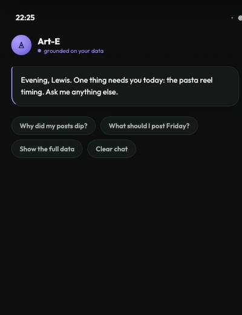
The mobile Art-E screen: "grounded on your data" was always the promise. S16 is where it becomes true.The tabs a pilot needs before they will trust us with a page: how to connect, what we send them, and how to see and delete what we hold.
- A pilot can connect a page, change notification preferences, and delete their data without help
- Data deletion is real and verifiable across the warehouse, the vector index and memory
- The connect flow works on dev-mode tokens (the OAuth Live Mode flip is S21, deliberately)
- Matches the mockup on desktop and mobile with honest states
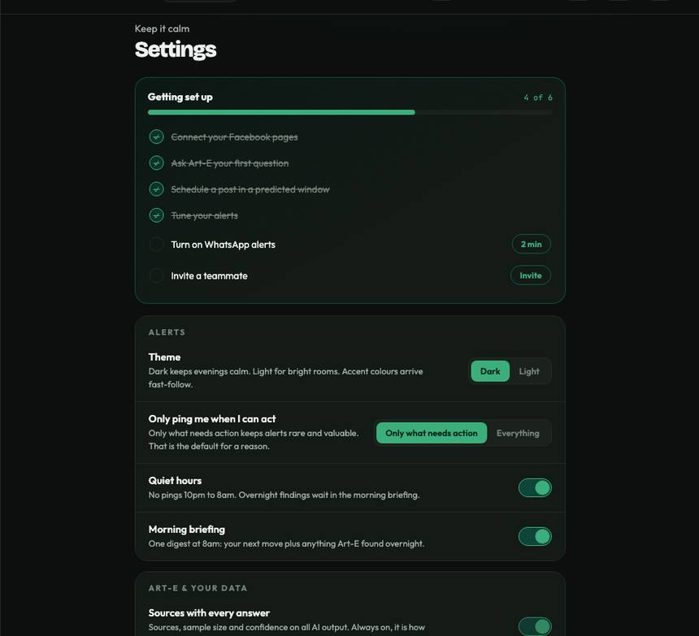
The mockup's Settings. S16 ships the three tabs that matter for trust; S21 completes the set.Sprint 17 · 25 Sep to 8 Oct · Make Art-E worth trusting
In one sentence: let pilots tell us when an answer is wrong, understand questions well enough to ask back when they are ambiguous, and route cheap questions to cheap models so the bill does not decide our roadmap.
The whole sprint in five moves
Everything below on this tab is detail. This is the sprint, in order.
What goes in, what comes out
| Capability | What goes in | What it looks at | What comes out |
|---|---|---|---|
| Feedback loop | A thumbs up or down plus an optional reason | Nothing modelled yet: it is captured, tenant-scoped, into a labelled store | A growing set of real hard cases for the eval set (and, later, router training). Never: a thumbs-down that vanishes without becoming a test case |
| Query routing | The question | Intent and ambiguity: which templates answer it, and whether it is answerable as asked | The right retrieval, or a clarifying question when the question is genuinely ambiguous. Never: a confident answer to a question we guessed the meaning of |
| Cost cascade | Every Art-E request | Cache hit first; cheap model where it suffices; frontier only where quality demands it, decided by a scorer | The same answer quality at materially lower cost, with every routing decision logged. Never: a silent quality drop to save money |
Research foundation · links verified 29 Jul 2026
Two questions with real answers in the literature: how to route cheaply without losing quality, and how to use feedback without being gamed.
An LLM cascade matched the best single model's accuracy with up to 98% cost reduction (or beat it by 4% at equal cost). The blueprint for cache → cheap → frontier, with a scorer deciding escalation.
Routers trained on preference data cut cost over 2x without significantly hurting quality. This closes our loop: the thumbs we start collecting this sprint are exactly that training signal, later.
A deployed assistant did improve from organic feedback, but only after building techniques to identify and discard unhelpful or adversarial feedback. With 20 pilot admins, one frustrated user can skew the signal: weight by consistency, do not train blind.
The shared framework for mixed-initiative dialogue: first decide whether to ask, then rank what to ask. Our clarifying-question feature needs both halves, and the ambiguity detector is the harder one.
What this changes in the build: the cascade ships with a pre-declared quality-retention line rather than a hope; every routing decision is logged so the trade is auditable; the ambiguity detector is a separate gate from the question generator; and feedback is treated as eval data first and training data much later, with adversarial-feedback filtering assumed from the start.
Who owns what
| Who | Tickets | In one line |
|---|---|---|
| Faheem | VD-AI-017A · 017B · QA-AI-017 | The feedback loop and quality audit, query understanding and routing (including clarifying questions), and the test suite gating answer quality, routing correctness and refusals |
| Asad | VD-ARTE-UI-017 | Thumbs UI with reason capture on every answer, and the memory controls surfaced in the chat and in Settings |
| Muteeb | VD-MLP-017 | The feedback pipeline into a tenant-scoped labelled store, and serving the improved routing behind the Art-E API |
| Rafeh | VD-QA-017 | Owns the Art-E quality bar using real thumbs data: tracks the up-rate and reviews down-voted answers every sprint |
| Filza | VD-LEGAL-017 | The harmful-output redlines (Art-E refuses legal, medical and financial advice) and the complaint-escalation flow |
| Lewis | VD-LEWIS-017 | Where Art-E's answers are weak in real pilot use, and the thumbed-down examples characterised into failure types |
| Alex | VD-STRAT-017 | The launch theme and the 6-week comms calendar back-cast from launch day |
| Jill | VD-OPS-017MVP | Per-tenant LLM cost attribution in the cost dashboard, and the 60%+ cache-hit target agreed with Muteeb |
Deliberately NOT doing
Definition of done
- Thumbs on every answer, with reason capture, feeding a labelled store; every thumbs-down becomes an eval case.
- Clarifying questions fire on genuinely ambiguous asks instead of confident guesses.
- Cascade live with no quality regression against the pre-declared retention line, and every routing decision logged.
- Cache-hit rate above 60%, measured; per-tenant cost attribution visible.
- Memory controls in chat and Settings, with forget verified.
- Harmful-output refusals (legal/medical/financial) documented by Filza and regression-gated.
- Quality tracked as a number: the up-rate reviewed by Rafeh with down-voted answers examined.
What is LIVE after this sprint, per the mockup
In one sentence: pilots can tell us when Art-E is wrong, Art-E asks when it is unsure, and the cost curve stops being scary.
No new page: the assistant gets the machinery that makes it improvable and affordable.
Two trust features: a one-click way to say "that was wrong" that actually goes somewhere, and a visible way to see and delete what Art-E remembers about you.
- Every answer has thumbs; a thumbs-down captures a light reason and becomes a labelled case in the eval set
- Memory controls are visible in both the chat and Settings, and forget actually forgets (verified)
- The up-rate is tracked as a number and reviewed each sprint (Rafeh)
- Feedback is tenant-scoped, like everything else
Art-E stops guessing what you meant. When a question could mean three things, it asks. And behind the scenes, cheap questions stop being answered by expensive models.
- Ambiguous questions get a clarifying question, not a confident guess (regression-gated)
- Routing correctness measured on the gold set; no quality regression from the cascade against a pre-declared retention line
- Cache-hit rate above 60% (the cost-of-goods target, measured weekly)
- Per-tenant cost attribution visible so each pilot's Art-E cost is known
- Every routing decision logged, so the cost-quality trade is auditable
Sprint 18 · 1 to 14 Oct · Fast, and impossible to catch lying
In one sentence: upgrade Art-E to the frontier model where it earns it, make the citation gate hard (an un-cited number simply cannot leave the building), and make every screen fast enough that a pilot never waits.
The whole sprint in five moves
Everything below on this tab is detail. This is the sprint, in order.
What goes in, what comes out
| Capability | What goes in | What it looks at | What comes out |
|---|---|---|---|
| Frontier upgrade | The same grounded Q&A path | Answer quality, multi-turn coherence, citation behaviour, refusal behaviour: all on the gold set | A better assistant, or the old one stays. Never: an upgrade shipped because it felt better |
| Citation gate | Every generated answer | Every numeric claim checked against what retrieval actually returned | The answer, or a block. Never: an un-cited number reaching a pilot (this is a hard gate, not a warning) |
| Cost guardrails | Per-tenant usage | Hard quotas plus a circuit breaker, fed by S17's per-tenant attribution | Spend that cannot run away. Never: a tenant that can quietly cost more than its ceiling |
Research foundation · links verified 29 Jul 2026
The case for making the citation gate hard rather than advisory is empirical, and slightly alarming.
Human audit of four shipped commercial generative search engines: only 51.5% of sentences fully supported by their citations, and only 74.5% of citations actually supported their statement. Fluent grounded-looking answers fail citation checks about half the time. This is why our gate blocks rather than warns.
MT-Bench's multi-turn design is the shape for our multi-turn coherence set (follow-ups like "and only for June?" that must keep context). LLM judges reach 80%+ agreement with humans, but are weak at grading arithmetic: so numbers get checked programmatically, never by a judge.
Splits RAG metrics into retriever faults vs generator faults. When a gold-set answer fails, this tells us whether to fix retrieval or the prompt: the difference between a wasted week and a targeted fix.
What this changes in the build: the gate is enforced at generation time and tested adversarially; multi-turn gets its own fixed conversation set rather than being assumed; failures are triaged retriever-vs-generator before anyone touches a prompt; and the frontier upgrade must clear the gold set before it serves a single pilot.
Who owns what
| Who | Tickets | In one line |
|---|---|---|
| Faheem | VD-AI-018A · 018B · QA-AI-018 | The frontier upgrade with multi-turn quality, the hard citation gate and hallucination block, and the accuracy audit that gates both |
| Asad | VD-PERF-018 · VD-AIDISC-UI-018 | The performance and scale pass across every shipped surface, plus AI labelling and the "why did Art-E say that" view |
| Muteeb | VD-MLP-018 · VD-COSTGUARD-018 · VD-E2E-018 · VD-SECAUDIT-018 | Frontier routing and cache tuning, hard per-tenant quotas with a circuit breaker, the end-to-end test suite for the 5 critical flows, and the OWASP sweep |
| Rafeh | VD-RAFEH-018B · VD-QA-018 | Owns the Art-E accuracy gate and the disclaimer UX; treats the accuracy gate and the citation gate as launch gates |
| Filza | VD-LEGAL-018 | Model-vendor contract review (training opt-out, data residency) and the vendor lock-in note with a contracted fallback model |
| Alex | VD-STRAT-018MVP | Launch press list, spokesperson prep and the one-sentence pitch |
| Jill | VD-OPS-018MVP | Frontier-model budget with the per-tenant quotas as the ceiling, and the circuit breaker wired to cost alarms |
| Lewis | VD-LEWIS-018 | The domain questions Art-E must never get wrong, feeding the accuracy audit |
Deliberately NOT doing
Definition of done
- Citation gate hard and verified adversarially: no un-cited number passes. Launch gate.
- Frontier upgrade proven on the gold set (accuracy, citation coverage, multi-turn, refusals) before serving anyone.
- AI labelling + "why" view live and understandable by a non-engineer.
- Performance targets met under realistic pilot-scale load, with no correctness regressions.
- Cost guardrails hard: per-tenant quotas plus a circuit breaker, proven to trip.
- End-to-end suite green on the 5 critical user flows; OWASP sweep findings fixed.
What is LIVE after this sprint, per the mockup
In one sentence: Art-E gets better and provably honest, and the whole app gets fast.
No new surfaces. Two hard launch gates and a speed pass across everything already shipped.
The difference between an assistant that usually cites and one that cannot not cite. Plus a visible way for a pilot to open any answer and see exactly what it was built from.
- No un-cited number passes. Verified adversarially, not just on the happy path (launch gate)
- Unsupported claims produce an honest "I cannot support that" rather than an invention
- Every answer is visibly labelled AI with the guidance-not-guarantee pattern
- The "why" view opens to the cited sources and the reasoning trail, understandable by a non-engineer
- Multi-turn coherence measured: a follow-up keeps page and period context
Every screen already shipped, made fast. The dashboard, analytics, drill-down and Discovery all stay quick under real pilot load rather than demo load.
- Lighthouse targets met on the main surfaces
- Dashboard and analytics stay fast under realistic pilot-scale load, measured not assumed
- Cache hit rates hold; the aggregation API absorbs the load without slow queries
- No regression in any shipped feature's correctness while optimising
Sprint 19 · 10 to 23 Oct · Prove it is safe before it is public
In one sentence: attack our own product until it holds. Tenant isolation proven at the data layer, prompt-injection and exfiltration hardened, secrets in a vault, and a real DSAR and data-export path, all before OAuth makes any of it public in S21.
The whole sprint in five moves
Everything below on this tab is detail. This is the sprint, in order.
What goes in, what comes out
| Capability | What goes in | What it looks at | What comes out |
|---|---|---|---|
| Isolation enforcement | Every query, cache key, queue message and vector namespace | Whether the tenant claim is enforced server-side at the data layer, not merely checked in the app | A proof: an automated test where tenant A cannot reach tenant B by any path. Never: isolation that depends on the caller behaving |
| Red-team | Adversarial prompts and crafted comment text | Prompt injection, data exfiltration, citation bypass, cross-tenant recall through memory | A findings list, each fixed and then permanently regression-gated. Never: a red-team that runs once and is never repeated |
| DSAR + export | A data request | Where a person's data lives across the warehouse, the labels, the vector index and memory | A complete export or erasure within the legal window, with proof. Never: a deletion that misses the vector index or memory |
Research foundation · links verified 29 Jul 2026
For security we lean on authoritative practice rather than papers: the checklists that name the attacks people actually run.
Prompt Injection is LLM01 and Sensitive Information Disclosure is LLM02: the top two risks are exactly our two exposures. The red-team gets structured against this list so coverage is arguable rather than improvised.
Names cross-context leakage in multi-tenant vector stores and embedding-inversion attacks explicitly. Each red-team case can cite the weakness it probes.
92% of 32-token inputs reconstructed exactly from their embeddings alone. 32 tokens is a meme caption. This is why the vector index is treated as containing tenant text, not anonymous numbers.
You do not need gradient-based attacks to break a system. For a small team: prioritise simple prompt-level attacks and existing-risk amplification over exotic techniques. This sizes our red-team honestly.
Isolation must be enforced and validated, not assumed from good intentions. The framing for making our isolation test a permanent gate rather than a one-off audit.
One month to respond, extendable by two only for complex requests. With 3.3M comments containing commenter data, finding one person's data across the warehouse and the NLP outputs is an engineering problem, not a policy one.
What this changes in the build: the red-team is structured against a published list (so "what did you test" has an answer); the vector index is classified as containing text; isolation becomes a permanent automated gate instead of an audit; and the DSAR path is exercised with a real sample request inside the legal window before launch, not after the first one arrives.
Who owns what
| Who | Tickets | In one line |
|---|---|---|
| Muteeb | VD-SECAUDIT-019 | Row-level security and per-tenant namespacing enforced at the data, RAG and memory layers, with the automated proof test, plus the OWASP sweep |
| Asad | VD-SECURITY-019 | Tenant isolation across every query, cache key, queue message and namespace; KMS encryption for tokens and data; every secret into a vault; account basics |
| Faheem | VD-AI-019-MVP · QA-AI-019 | Prompt-injection and exfiltration hardening, and the permanent security regression gate in the model-test suite |
| Filza | VD-DSAR-019 · VD-LEGAL-019 · VD-NARRATIVE-019 | The DSAR workflow and export spec, the customer-data-leakage red-team with its disclosure review, and the narrative firewall keeping behavioural-intelligence language off every public and Meta-facing surface |
| Rafeh | VD-OAUTH-REVIEW-019 · VD-QA-019 | The Meta App Review strategy (narrowest permission set, conservative submission narrative, screencast plan) and security as a hard launch gate in acceptance |
| Alex | VD-STRAT-019MVP | The unit-economics dashboard spec and a curated demo dataset that shows every feature in one walkthrough |
| Jill | VD-OPS-019MVP | Security tooling budget, automated backups confirmed on, and the pilot-expansion cost (5 to 15) signed off with Alex |
| Lewis | VD-LEWIS-019MVP | What pilots need to see to trust us with their data, and a sense-check of the deletion and export flows against their expectations |
Deliberately NOT doing
Definition of done
- Tenant isolation proven by automated test across every path. Hard launch gate.
- Red-team passed: no crafted prompt leaks another tenant's data or echoes secrets, and every finding is regression-gated permanently.
- Secrets in a vault, data and tokens encrypted at rest with KMS; nothing in code or environment variables.
- OWASP sweep complete with findings fixed.
- DSAR tested with a real sample request and completed within the window; export usable; deletion verified across warehouse, index and memory.
- Narrative firewall applied: no behavioural-intelligence framing on any public or Meta-facing surface.
- App Review strategy written: narrowest permission set, conservative narrative, screencast plan.
What is LIVE after this sprint, per the mockup
In one sentence: we can prove a pilot's data is theirs alone, and a person can get or delete their data.
Nothing new appears. What appears is confidence, evidenced: the gates that make going public defensible.
The sprint's deliverable is a set of tests that keep passing. Every one of them corresponds to a way a real product has been broken before.
- Automated test proves tenant A cannot reach tenant B through any query, cache, queue or vector path. Launch gate.
- A crafted prompt cannot make Art-E leak another tenant's data or echo secrets from memory or retrieval
- All secrets in a vault (never environment variables or code); tokens and pilot data encrypted at rest with KMS
- OWASP sweep on the APIs complete with findings fixed (auth, injection, access control)
- The security regression gate is permanent: it runs on every change from now on
The legal right made real: a request comes in, we find everything, we export or erase it, within the window, with proof we did.
- The workflow is tested with a sample request, not just documented
- Erasure reaches everything: warehouse, labels, vector index, memory, backups policy
- Within one month, the legal deadline, with the extension rules understood
- Self-serve export produces the data in a usable form
- Account deletion works end to end and is verifiable
Sprint 20 · 16 to 29 Oct · Break it on purpose, before launch does
In one sentence: find out where the product breaks under load while it is still private, make it degrade gracefully instead of falling over, do the final model audit, and build the launch-readiness scorecard the go/no-go will actually be decided on.
The whole sprint in five moves
Everything below on this tab is detail. This is the sprint, in order.
What goes in, what comes out
| Capability | What goes in | What it looks at | What comes out |
|---|---|---|---|
| Load + break testing | Synthetic load at multiples of pilot scale | Each component separately (scoring, ingestion, warehouse), with both ramp and burst patterns, plus recovery after overload | Known breaking points and fixed retry amplification. Never: a system whose limits are discovered by real users |
| Graceful degradation | Traffic under pressure | Criticality tiers: compose-time scoring is critical; backfill and re-scoring are sheddable | A product that gets slower and simpler rather than failing. Never: a cascade where one slow component takes the app down |
| Final model audit | Every production model | Gold-set performance, drift since the last check, every launch-gate threshold | A signed statement that the models are launch-ready, or a named blocker. Never: a model shipped to launch unaudited |
Research foundation · links verified 29 Jul 2026
Launch readiness is an operations problem with a mature literature, so we borrow rather than invent.
Serve degraded responses rather than fail: criticality tiers let a backend shed low-priority traffic first. Directly maps to compose-time scoring as critical and backfill as sheddable.
Load test until things break, with both gradual ramp and impulse patterns, and observe recovery. Always use randomised exponential backoff with per-request retry limits: retry amplification between layers is how a small failure becomes an outage.
Controlled experimentation: declare the steady-state hypothesis first, then vary failure events with a minimised blast radius. The same pass-lines-before-results discipline we use everywhere else, applied to infrastructure.
A 19-item read-aloud checklist cut deaths from 1.5% to 0.8% and complications from 11% to 7% across 8 hospitals. The evidence base for a formal, read-aloud go/no-go with a named owner per item, rather than a confident meeting.
What this changes in the build: components are broken separately rather than only end-to-end; burst patterns are tested because one viral meme is a burst, not a ramp; criticality tiers are decided now rather than during an incident; and the go/no-go becomes a read-aloud checklist with owners, which the evidence says materially changes outcomes.
Who owns what
| Who | Tickets | In one line |
|---|---|---|
| Muteeb | VD-MLP-020 | Graceful degradation, queue back-pressure and the break tests; confirming the dead-letter queue holds during a surge |
| Asad | VD-RATELIMIT-020 | Rate limiting and abuse protection ahead of the public surface, tuned so it never blocks a legitimate pilot |
| Faheem | VD-AI-020-MVP | The final accuracy audit across every production model, confirming no drift and every launch-gate threshold met |
| Rafeh | VD-RAFEH-020D · VD-QA-020 | Owns product launch readiness: every surface accepted with its states verified, and the launch-readiness view that feeds the go/no-go |
| Alex | VD-STRAT-020MVP | Launch-readiness review #1: the red/amber/green scorecard and the Top-5 risks each with an owner, mitigation and trigger |
| Filza | VD-LEGAL-020 | SLA commitments aligned with what the infrastructure can actually deliver, plus incident-comms templates for customers, regulators and press |
| Jill | VD-OPS-020MVP | Headroom for a launch traffic bump and the rate-limiting/WAF cost inside the run-rate |
| Lewis | VD-LEWIS-020 | Would a page owner actually act on these? The reality check on the proactive surfaces before launch |
Deliberately NOT doing
Definition of done
- Break points known for scoring, ingestion and the warehouse, under both ramp and burst.
- Degradation works: criticality tiers implemented, compose-time scoring survives a surge, backfill sheds.
- No retry amplification: randomised backoff with caps, audited between layers.
- Rate limiting live without blocking legitimate pilot usage.
- Final model audit passed: no drift, every launch-gate threshold met, signed.
- Launch-readiness scorecard live with every MVP feature's status and evidence.
- Top-5 risks documented with owners, mitigations and triggers.
- SLAs and incident-comms templates agreed and reviewed.
What is LIVE after this sprint, per the mockup
In one sentence: we know exactly where it breaks, it degrades instead of dying, and there is one page that says whether we can launch.
Nothing new for pilots. The deliverable is knowledge, resilience, and a scorecard.
The one page that turns "are we ready?" from a feeling into a document: every feature, its acceptance state, its evidence, and what would have to be true to call it green.
- Every MVP surface has passed acceptance or carries an explicitly accepted deviation, with evidence attached
- Empty, loading and error states verified on every surface (the boring failure that embarrasses at launch)
- Rate limiting does not block a legitimate pilot's normal usage, tested against real usage patterns
- Top 5 launch risks each have an owner, a mitigation and a trigger event
Under a spike, the product stays useful: compose-time scoring keeps working while background jobs queue. And the retry storms that turn a small problem into an outage are audited out.
- Each component break-tested separately with ramp and burst profiles, and recovery observed after overload
- Criticality tiers implemented: compose-time scoring critical, backfill sheddable
- Retries use randomised exponential backoff with per-request caps; no retry amplification between layers
- The dead-letter queue from S11 catches failures during a surge
- Final model audit passed: no drift, all launch-gate thresholds met
Sprint 21 · 21 Oct to 3 Nov · The doors open
In one sentence: Facebook OAuth goes to Live Mode so anyone can connect a page for real, the full Settings ships, and a new pilot can go from zero to first value without anyone holding their hand. Added 5 Aug: "first value" now has a definition, from Alex's Progressive Intelligence doc: the last 90 days analysed first in his priority order (audience identity, top and bottom posts, themes, sentiment, cadence, predictions), real recommendations within minutes, and the connect screen showing "learning", never "loading", while history backfills behind the scenes on the S12 queue. This is the sprint with the single biggest external dependency: Meta's App Review is not on our schedule.
The whole sprint in five moves
Everything below on this tab is detail. This is the sprint, in order.
What goes in, what comes out
| Capability | What goes in | What it looks at | What comes out |
|---|---|---|---|
| OAuth Live Mode | A page owner clicking connect | Consent, scope, token exchange, refresh and revocation, multi-page per tenant | A real connection any member of the public can make. Never: a token stored unencrypted, a scope we do not need, a connection that cannot be revoked |
| Onboarding | A brand-new pilot with nothing configured | The shortest path from connect to a first useful, credible insight on their own data | A pilot who reaches value without help. Never: an empty product that requires a call to become useful |
| Settings (full) | The pilot's preferences | All 7 tabs including quiet hours and notification channels | Control over everything we do to them. Never: a notification a pilot cannot turn off |
Research foundation · the review is a trust exam, and we have the syllabus
Alex's OAuth research is the playbook here
Two internal docs (Alex, Jul 2026) set the strategy this sprint executes. Meta reviews risk, not sophistication: the reviewer asks "does this look like a trustworthy operational tool", so the app narrative stays conservative ("creator collaboration platform", "page analytics tool"), never "network intelligence" or "viral optimisation", which pattern-match to manipulation categories. The permission ladder is incremental: request only what maps to visible, built features (login, page identity, read-only analytics); publishing, messaging and ad permissions wait until trust and business verification exist. The screencast is procedural proof: the reviewer must literally watch login, permission dialog, grant, use, and the resulting feature work, with nothing left to infer. Rejections are mostly self-inflicted: overambitious language, overreaching scopes, unreproducible test flows.
First value in minutes: the onboarding contract
Alex's Progressive Intelligence doc defines what "onboarded" means: the last 90 days analysed first, real recommendations within minutes, the connect screen always showing learning, never loading, while the S12 queue walks history backwards behind the scenes. The demo for this sprint is a stopwatch test: a fresh page owner connects and reaches their first actionable recommendation before their coffee cools.
Who owns what
| Who | Tickets | In one line |
|---|---|---|
| Asad | VD-040-OA · VD-235 · VD-CONN-UI-021 · VD-SETTINGS-UI-021 | The final task: OAuth Live Mode end to end, the full 7-tab Settings, connected-pages UI with the onboarding tour, cookie consent, and staging/canary/rollback |
| Muteeb | VD-OAUTH-BE-021 · VD-041-SEC · VD-SEC-021 · VD-BACKUP-021 | Co-owns OAuth so it is not a single-owner risk (token backend, refresh, revocation, multi-page model), plus the pen-test and backup/restore confidence |
| Faheem | VD-AI-021A · 021B · VD-CITE-021 | Pre-launch model freeze and version pinning, the production AI smoke test across every endpoint, and automated hallucination detection |
| Rafeh | VD-RAFEH-021A · 021B · 021C | Owns pre-launch copy across every customer surface, the signup and onboarding flow (a new pilot reaches value without help), and per-pilot UAT prep plus the churn-risk watch |
| Filza | VD-LEGAL-021 · VD-COMPLIANCE-021 | The full pre-launch legal sweep: Terms, Privacy, DPA and Cookie Policy signed launch-ready, and the DSAR workflow tested end to end |
| Lewis | VD-LEWIS-021 | Personally walks each of the 5 pilots through the live OAuth flow, surfacing friction immediately: the launch-critical journey validated by real humans |
| Alex | VD-STRAT-021MVP | Launch comms, customer-story videos, and go/no-go preparation |
| Jill | VD-OPS-021 | Pen-test budget, launch infra headroom for OAuth-driven traffic, and a smoke test of the manual invoicing path |
Deliberately NOT doing
Definition of done
- OAuth Live Mode approved and working for a member of the public, with multi-page support, encrypted tokens and working revocation.
- A new pilot reaches first value without help, verified by Lewis with real pilots.
- Settings complete: 7 tabs, notification preferences, quiet hours respected everywhere.
- Cookie consent compliant and staging/canary/one-command rollback proven.
- Pen-test complete with S19 findings confirmed closed.
- Legal sweep signed: Terms, Privacy, DPA, Cookie Policy launch-ready; DSAR tested end to end.
- Models frozen and pinned, production smoke test green across every endpoint.
What is LIVE after this sprint, per the mockup
In one sentence: anyone can connect their page and reach value alone, and control everything we do with it.
The last two product surfaces complete. After this sprint, everything is proving and polishing.
The moment the product stops being invite-only: a page owner clicks connect, grants the narrowest set of permissions we need, and sees their pages with real connection health.
- App Review approved and Live Mode flipped (the one gate we do not control: submitted day 1, tracked daily)
- The full journey works for a stranger: consent, exchange, refresh, revocation, multiple pages
- Tokens encrypted at rest; revocation actually revokes
- Connection health is honest: a stale or broken connection says so and offers a re-sync
- A new pilot reaches first value without help (the onboarding test, run by Lewis with real pilots)
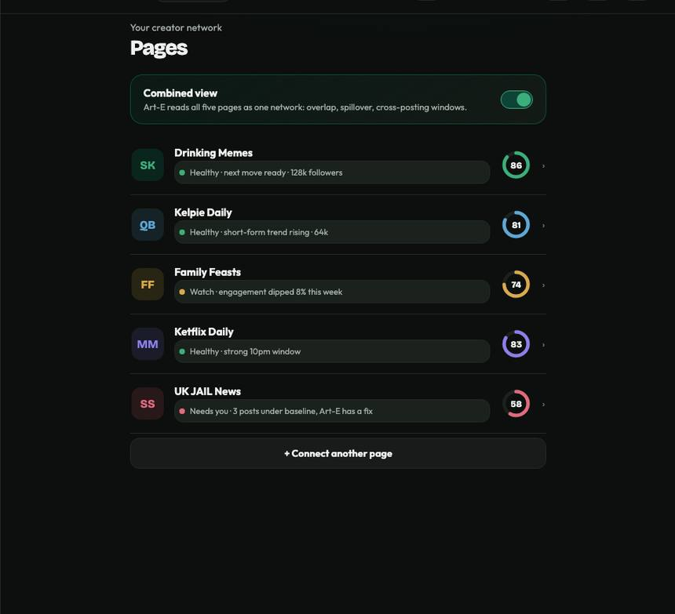
The mockup's Pages view: connection health per page. S21 makes it a real OAuth connection rather than a dev-mode token.Everything a pilot might want to control, in one place, including when we are allowed to interrupt them.
- All 7 tabs functional, matching the mockup on desktop and mobile
- Quiet hours respected by every notification path (including crisis alerts, with the agreed exception rules)
- Cookie consent compliant with proper opt-in for analytics and marketing
- Staging plus canary deploy plus one-command rollback proven, so a bad launch deploy is minutes not hours
Sprint 22 · 2 to 15 Nov · Five real people, one honest verdict
In one sentence: put the finished product in front of all five pilots, watch them use it without help, fix what breaks, convert them to paying, and produce the go/no-go memo with evidence rather than optimism.
The whole sprint in six moves
Everything below on this tab is detail. This is the sprint, in order.
What goes in, what comes out
| Capability | What goes in | What it looks at | What comes out |
|---|---|---|---|
| UAT | 5 pilots, the full product, no hand-holding | Comprehension, not preference: can they do the task, do they understand what they are seeing, would they act on it | A defect list per pilot with severity, plus the honest answer to whether the product is usable. Never: a demo where we drive |
| Defect triage | Every issue found | Launch-blocker vs post-launch against written criteria | A fixed blocker list and an accepted deviation list. Never: a blocker reclassified because the date is close |
| Go/no-go | Every launch gate's evidence | Each criterion, its evidence, and whether it passed | A written memo with a yes or a no and the reasoning. Never: a verbal consensus without a document |
Research foundation · links verified 29 Jul 2026
Two questions worth getting right: how many testers is enough, and what actually predicts whether a pilot sticks.
5 users surface about 85% of usability problems, and returns diminish steeply after that: better to run 3 smaller rounds than one big one. Our 5 pilots are, by luck, exactly the right sample; the discipline is doing 2 to 3 fix-and-retest rounds rather than one pass.
The average product loses 77% of users within 3 days; top products retain ~75% at day 1 vs ~29% average, and the gap is set almost entirely in the first session. This makes onboarding an activation problem: our aha moment is a pilot seeing their first credible flop warning, with reasons, on their own posts.
The go/no-go evidence, again: a read-aloud checklist with named owners nearly halved surgical deaths. The go/no-go memo is read item by item with an owner answering each, not skimmed in a meeting.
What this changes in the build: UAT is structured as 2 to 3 iterative rounds rather than one big session; we measure comprehension (can they act on it) rather than satisfaction (did they like it); the first-session path gets disproportionate attention because that is where retention is decided; and the go/no-go is read aloud with owners.
Who owns what
| Who | Tickets | In one line |
|---|---|---|
| Rafeh | VD-UAT-022 · VD-RAFEH-022 · 022E · VD-QA-022 | Runs formal UAT with each pilot, triages every defect, owns the pre-launch QA sweep and copy audit, and the final product go/no-go sign-off |
| Asad | VD-044-UAT · VD-UAT-FIX-022 · VD-LEGAL-WEB-022 | Launch-blocking defect fixes, final polish on states and mobile, and the marketing site updated with real screenshots plus legal pages live |
| Muteeb | VD-PERF-022 · VD-LOGIN-022 · VD-FB-OAUTH-022 · VD-UAT-022a | Final performance work (slowest queries, cache hit above 70%), login hardening, OAuth completion, and structured UAT support |
| Faheem | VD-AI-022-MVP | Final pre-launch validation on the frozen models against the gold set, and sign-off on Art-E answer quality, citation coverage and refusals |
| Alex | VD-STRAT-022MVP | Launch-readiness review #2 and the written go/no-go memo with explicit criteria and evidence per criterion |
| Lewis | VD-UAT-022a | Runs the pilot side of UAT and drives the conversion conversations: five paying customers is the real validation |
| Filza | VD-LEGAL-022 | Cross-tenant privacy attestation, final legal sign-off, and approving the customer-facing explanation of how cross-client intelligence works |
| Jill | VD-OPS-022MVP | Launch-week burn cap and the 12-month run-rate locked for board sign-off |
Deliberately NOT doing
Definition of done
- All 5 pilots completed the full journey unaided, across 2 to 3 fix-and-retest rounds.
- Every defect triaged against written criteria; all launch-blockers fixed and retested.
- Every launch gate green or carrying an accepted written deviation.
- 5 pilots converted to paying, invoiced by hand, terms matching.
- Performance final: slowest queries fixed, cache hit above target.
- Website and legal pages live with real product screenshots.
- The go/no-go memo written, with criteria, evidence and reasoning, read aloud with owners.
What is LIVE after this sprint, per the mockup
In one sentence: five real people used it, we fixed what broke, and there is a written verdict on whether we launch.
No new features. The deliverable is evidence, plus a product with its rough edges filed off.
Five people who did not build it, using it for real, while we watch and write down everything that confuses them. Then we fix the things that matter and honestly defer the rest.
- Each pilot completes the full journey unaided: connect, daily loop, analytics, predictions, crisis, reports, Discovery
- Every defect captured with severity and triaged against written blocker criteria
- All launch-blocking defects fixed and retested with the pilot who found them
- Empty, loading and error states polished across every surface; mobile experience verified
- Marketing site updated with real product screenshots; Terms, Privacy and Cookie pages live and linked
The document that decides the launch: every criterion, the evidence for it, and a yes or no with reasoning. Read aloud with a named owner per item, because the evidence says that changes outcomes.
- Every launch gate green or with an accepted, written deviation: security, tenant isolation, Art-E accuracy, citation gate, crisis false-alarm rate
- Every MVP feature's acceptance status recorded with evidence attached
- 5 pilots converted to paying, invoiced by hand, terms matching what was agreed
- 12-month run-rate locked for board sign-off; launch-week burn cap set
- The memo exists in writing, with reasoning, before launch week begins
Sprint 23 · 11 to 25 Nov, public launch date held: 28 Nov · Launch
In one sentence: flip it on, watch it like hawks, support the five pilots personally, invoice them, and turn what we learn in the first week into the roadmap for what comes next. 28 November is the committed date.
The whole sprint in five moves
Everything below on this tab is detail. This is the sprint, in order.
What goes in, what comes out
| Capability | What goes in | What it looks at | What comes out |
|---|---|---|---|
| Launch-day monitoring | Everything the product does, live | Uptime, error rates, pipeline freshness, per-tenant health and Art-E cost, on one board | Problems seen by us before pilots feel them. Never: a pilot being the monitoring system |
| Model watch | Live model outputs | Confidence distributions, drift signals, crisis false-alarm rate, all against the launch-gate thresholds | A daily verdict on whether the models still hold. Never: a launch-week model change made in a panic |
| Post-launch synthesis | Everything the first week teaches us | What shipped vs the plan, what pilots actually used, what broke | The Fast-Follow sequence and Roadmap V2. Never: a retro that produces feelings and no order |
Research foundation · links verified 29 Jul 2026
Launch week is an incident-management problem, and the SRE literature is unusually direct about how small teams should run it.
Separate the incident commander from the person changing systems, keep a living incident document, and agree the triggers for declaring an incident in advance. Even at three people this separation is what stops a launch-day problem becoming a launch-day outage.
The degradation tiers built in S20 are what launch-day traffic will actually test: compose-time scoring stays up, backfill waits.
Steady-state hypotheses declared before the event: on launch day, that means knowing what healthy looks like on the board before traffic arrives, so a deviation is obvious.
What this changes in launch week: roles are assigned before go-live rather than during the first incident; the incident triggers are written down (a pilot seeing wrong data is a declared incident, not a chat message); healthy is defined on the board in advance; and no model changes are made during launch week, whatever the temptation.
Who owns what
| Who | Tickets | In one line |
|---|---|---|
| Asad | VD-045-GL | Executes go-live: flips the public product on, runs the launch-day checklist, smokes every critical flow on production |
| Muteeb | VD-046-MON | Launch-day monitoring on one board (uptime, errors, pipeline freshness, Art-E cost, per-tenant health) plus the on-call rota |
| Faheem | VD-AI-023A · 023B | Launch-week AI war-room ownership, watching confidence distributions and drift daily, plus the post-launch retrain triggers and quarterly plan |
| Rafeh | VD-047-RM · VD-RAFEH-023 · VD-QA-023 | Leads the war-room data, runs launch-day QA and first-week defect triage, and owns the retrospective plus Roadmap V2 sequencing |
| Alex | VD-STRAT-023MVP | Executes the launch-day comms run-of-show, writes the retrospective synthesis, and pulls the Series-A trigger |
| Lewis | VD-LEWIS-023 | The support channel for the 5 pilots (the self-serve help centre is deliberately Fast-Follow) and the first-week relationship watch that catches churn early |
| Filza | VD-LEGAL-023 · VD-INVOICE-023 | The 30-day legal-issue log, the paid-customer MSA template, and invoicing each of the 5 pilots by hand |
| Jill | VD-OPS-023MVP | Watches launch-day spend against the burn cap in real time and confirms the cost alarms and circuit breakers hold under the surge |
Deliberately NOT doing
Definition of done
- Live on 28 November with every MVP surface public and the launch checklist smoked on production.
- Monitoring live from minute one with separated incident roles and pre-agreed declaration triggers.
- Zero P1 defects open at go-live.
- Five pilots invoiced and paying.
- Models frozen and watched: drift, crisis false-alarm rate and cost checked daily against thresholds.
- Retrospective completed and Roadmap V2 sequenced with the Fast-Follow backlog in order.
- Legal issue log open and the paid-customer MSA ratified.
What is LIVE after this sprint, per the mockup
In one sentence: it is live, five people are paying for it, and we know what to build next.
Everything in the mockup, live for the public, on the committed date.
The finish line of everything from S6 onward: a page owner anywhere can connect, and get an assistant that warns them honestly, tells them when to post, watches their back, and answers with receipts.
- Launch-day checklist smoked on production: connect, daily loop, analytics, crisis, Art-E, reports, Discovery, all verified live
- Monitoring live from minute one; incident roles separated (whoever commands is not the one typing)
- Zero P1 defects open at go-live; anything else on the triaged list with an owner
- Models frozen, pinned and watched: no launch-week model changes
- Five pilots invoiced and paying
Launch is a beginning, not an end. The first week is watched with separated roles and a written record, and the retro turns it into the next roadmap rather than a feeling.
- War room with separated roles: an incident commander who is not the person changing systems
- Explicit triggers for declaring an incident, agreed in advance (a pilot seeing wrong data is one)
- Model drift, crisis false-alarm rate and Art-E cost checked daily against thresholds
- Retrospective completed: shipped vs plan, keep, drop
- Roadmap V2 sequenced with the Fast-Follow backlog in order